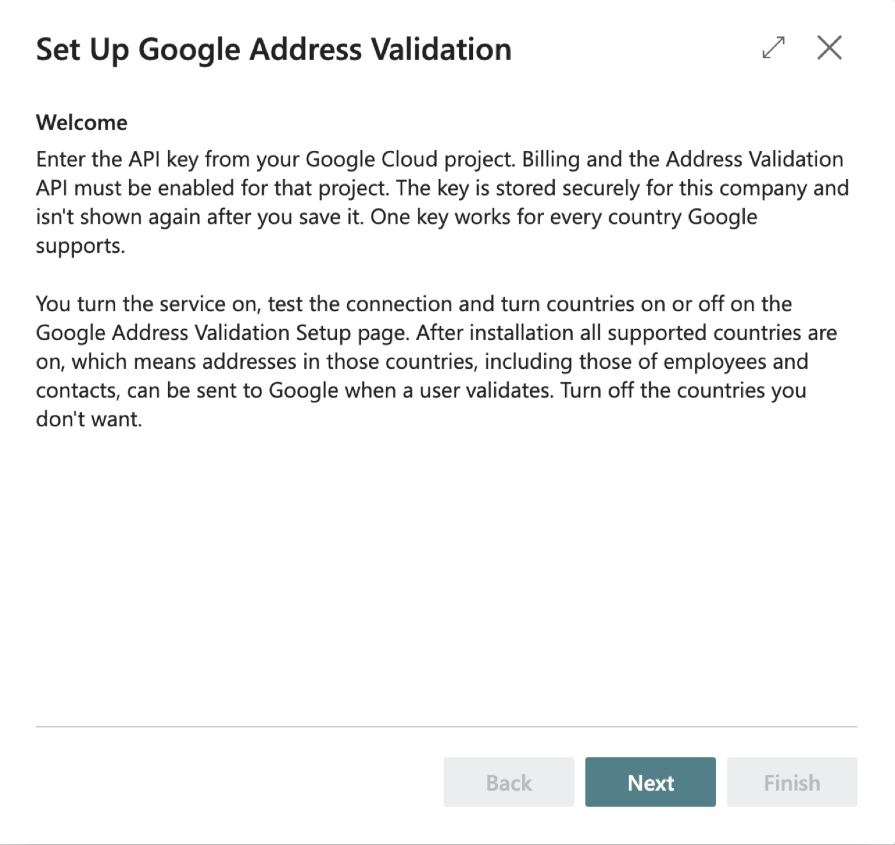
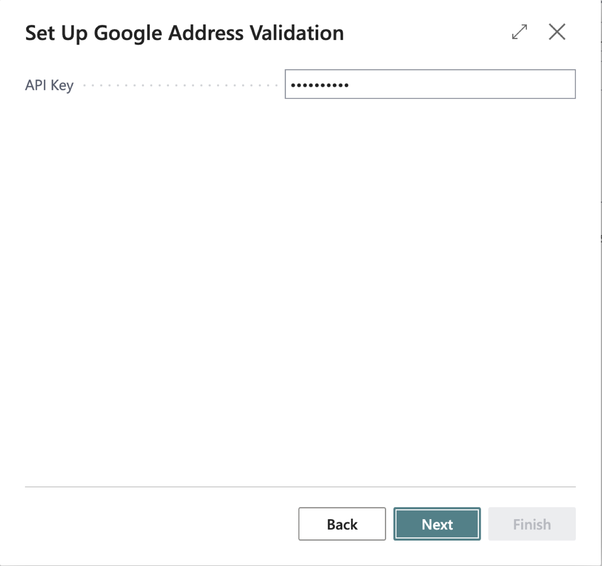
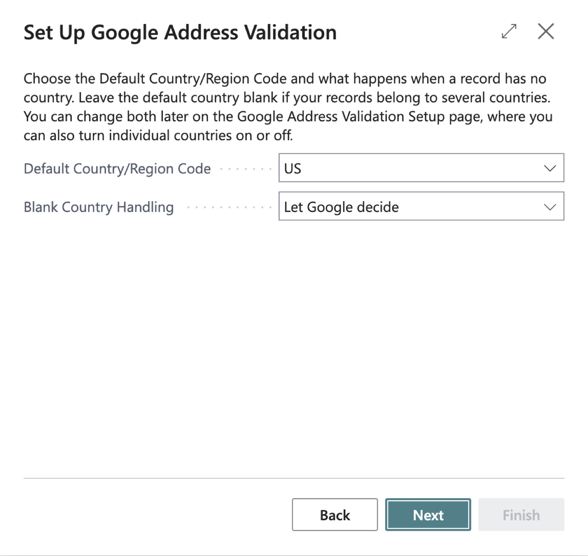
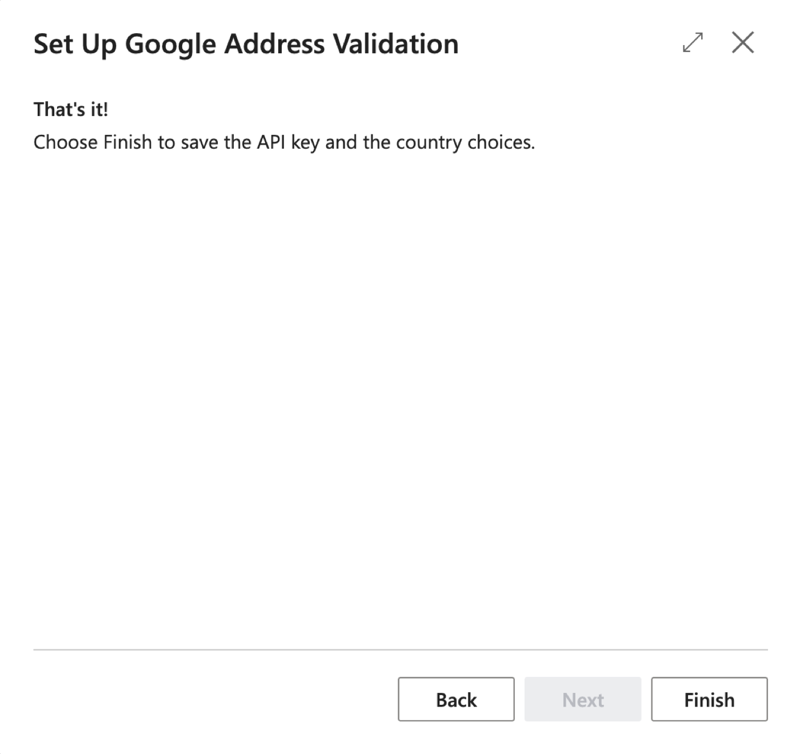
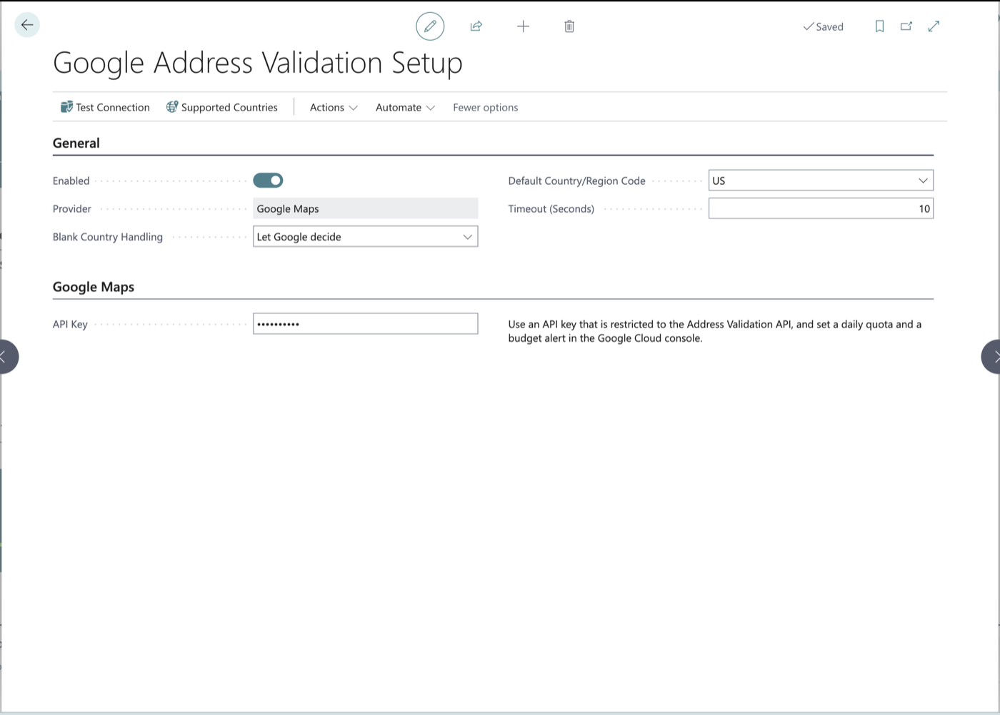
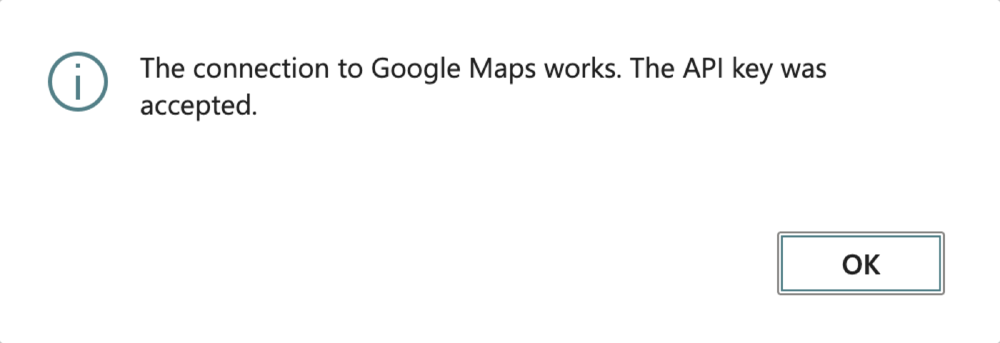
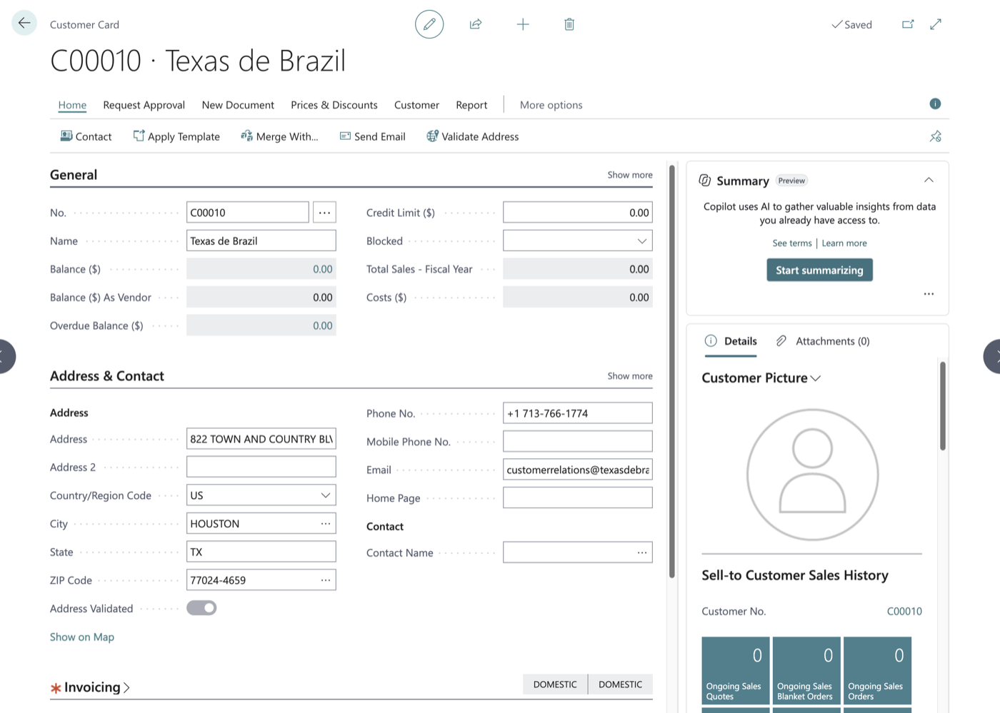
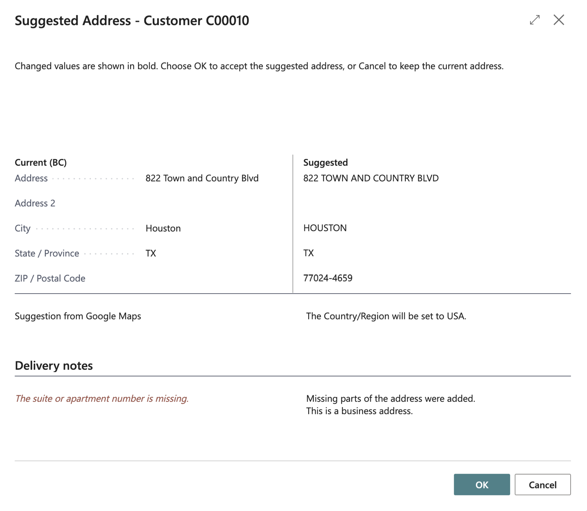
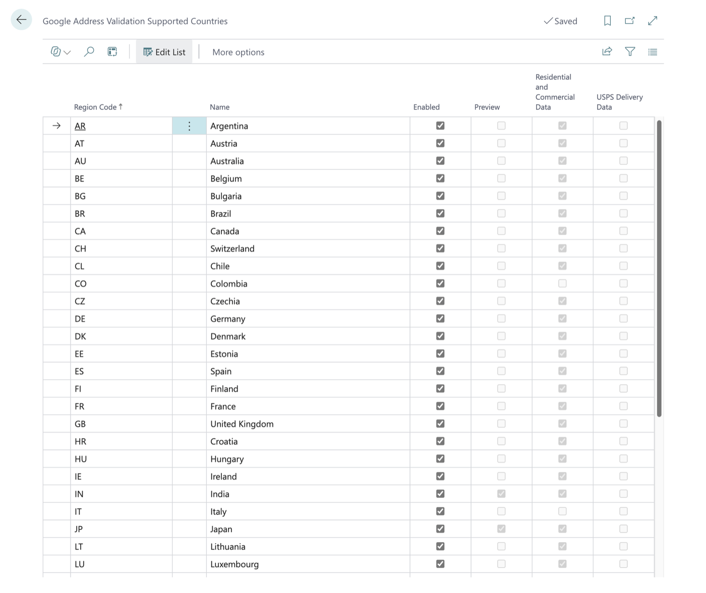

User Guide
Version 1.3.0.3. Works on 16 cards (Customer plus 15 more master-data cards) in the 40 countries Google covers. Version 1.0.0.0 and 1.2.0.4 passed the manual release test in a sandbox.
1. What this extension does for you
Google Address Validator checks an address with Google Maps while you are on the card of the record that holds it. You see your address and Google's suggested version side by side, and you can accept the suggestion with one click or keep what you have. A read-only Address Validated field on the record tells you whether the current address has been confirmed or accepted, and every check that reaches Google is written to a log.
New in version 1.2: validation is no longer limited to the United States. It works in the 40 countries and regions Google covers (section 4.12), and a blank Country/Region Code is filled in from the country Google found.
New in version 1.1: this works on the Customer Card (as before) and on 15 more cards: Ship-to Address, Customer Bank Account, Vendor, Order Address, Remit Address, Vendor Bank Account, Company Information (the company address and the ship-to address), Location, Responsibility Center, Bank Account, Employee, Alternative Address, Contact, Contact Alternative Address and Resource. The lists are in section 3, and the changes are in sections 4.6 to 4.11. Nothing else about the customer changed except five small points, listed in section 4.10.
2. Before you start
- Permission set. To validate addresses you need
OBCFGAV GAV, USE("Google Address Validator - Use"). To set the extension up, enter the API key or change the setup you needOBCFGAV GAV, ADMIN("Google Address Validator Admin"). Your Business Central administrator assigns these on the Users page. - To accept a suggested address you also need your normal permission to modify the table you are checking (customers on the Customer Card, vendors on the Vendor Card, and so on). Without it you can still run the check and see the suggestion, but you cannot accept it. The permission sets above do not include any of these; they come from your usual Business Central permissions. Where Business Central also updates a linked record (section 4.8), you need permission to modify that record too, or accepting ends in a logged error and nothing changes. Company Information normally needs an administrator.
- Setup must be done once per company, by an administrator (section 4.1). Until then the check tells you that validation is not set up.
- The API key is your company's own. It belongs to your company's Google Cloud project, which must have billing and the Address Validation API turned on. The extension does not supply a key.
- Every check is a billable Google request. Google's free allowance covers low volume (see the FRD: Google currently includes 5,000 free requests a month, shared by all countries, and the expected volume here is well below that; the price after that is in section 4.12), but each check you run counts as one request on your company's Google account. Check one customer when you need to; do not run checks just to try things out on real data.
- Check one customer at a time, by hand. There is no automatic or bulk validation, and the check is for interactive use only (not for scheduled jobs or integrations).
- Addresses in 40 countries can be checked (from 1.2). The record's Country/Region Code must be one of the countries on the Supported Countries page (section 4.12) and that country must be switched on. What happens to a record with a blank Country/Region Code depends on the Blank Country Handling setting (section 4.12): by default Google works the country out from the address. A country Google does not cover, or one an administrator switched off, is refused before anything is sent. For Company Information the rule is applied to the address being checked: the company address uses Country/Region Code, the ship-to address uses Ship-to Country/Region Code.
3. Getting there
- Validating an address: open a customer (search for Customers, then open the Customer Card). The action is Validate Address, shown on the ribbon and also under Actions, then Functions. The other cards have the same action (the table below).
- The Address Validated field: on the Customer Card, in the Address & Contact FastTab, right after Post Code. On the other cards it is next to the address, as the table below says.
- The log for one record: on the Customer Card, under Customer, choose Google Address Validation Log. The other cards have the same action in their own menu (the table below). The whole log is also found by searching for Google Address Validation Log, or just for Google or address validation.
- Supported countries: search for Google Address Validation Supported Countries, or open the setup page and choose Supported Countries (section 4.12).
- Setup (administrator): search for Assisted Setup and choose Set up Google address validation, or search for Google Address Validation Setup (searching for Google or address validation also finds the setup page, the guided setup and the log).
3.1 The cards that have Validate Address (version 1.1)
Every card below has a Validate Address action (on the ribbon and under Actions; where the card has a Functions group, it is in Functions), a read-only Address Validated field, and a Google Address Validation Log action. You open each card the usual way, from its list or from the record it belongs to; this version adds nothing to any list page.
Sales and customer
| Card | Address Validated sits | Log action is in the menu group |
|---|---|---|
| Customer Card | after Post Code | Customer |
| Ship-to Address | after Country/Region Code | Address |
| Customer Bank Account Card | after Post Code | Navigation |
Purchasing and vendor
| Card | Address Validated sits | Log action is in the menu group |
|---|---|---|
| Vendor Card | after Post Code | Vendor |
| Order Address | after Country/Region Code | Address |
| Remit Address | after Country/Region Code | Location |
| Vendor Bank Account Card | after Country/Region Code | Navigation |
Company and organization
| Card | Address Validated sits | Log action is in the menu group |
|---|---|---|
| Company Information (two actions, see 4.7) | Address Validated after Country/Region Code; Ship-to Address Validated after Ship-to Country/Region Code | Navigation |
| Location Card | after Country/Region Code | Location |
| Responsibility Center Card | after Country/Region Code | Resp. Ctr. |
| Bank Account Card | after Country/Region Code | Bank Acc. |
People
| Card | Address Validated sits | Log action is in the menu group |
|---|---|---|
| Employee Card | after Country/Region Code | Employee |
| Alternative Address (of an employee) | after Country/Region Code | Address |
| Contact Card (companies and persons) | at the end of the Address group | Contact |
| Contact Alternative Address Card | after Country/Region Code | Alt. Contact Address |
| Resource Card (persons and machines) | after Country/Region Code | Resource |
Note: the menu-group names above come from the code and from Business Central's standard pages; the exact wording on your US-localized pages was not seen. If a name differs, look in the card's other menus. Where a card shows Address Validated in a place you did not expect, tell your administrator; the anchors were checked on the standard (W1) pages only.
4. Tasks
4.1 Set up the extension for the first time (administrator)
Search for Assisted Setup and choose Set up Google address validation (its description reads "Enter the Google Maps API key used to validate addresses."). The guided page is titled Set Up Google Address Validation.
On the Welcome step read the text and choose Next. It reminds you that billing and the Address Validation API must be enabled in your Google Cloud project, and that you turn the service on and test the connection on the Google Address Validation Setup page afterwards.

On the Google Maps API Key step enter the API Key from your Google Cloud project. The field is masked. Next stays unavailable until it is filled in. If a key is already saved (you run the wizard again), the field shows it masked and you can simply choose Next to keep it.

On the Countries step choose the Default Country/Region Code (for example
US; leave it blank if your records belong to several countries) and Blank Country Handling (Let Google decide is the default). Nothing is filled in for you: the default country is blank until you choose one. A message tells you if the country is not covered by Google or is switched off.
On the last step (That's it!) choose Finish to save the key and the country choices. The key is stored securely for this company and is not shown again.

Search for Google Address Validation Setup and open it (the setup card). Check these fields:
- Enabled – switch this on. It starts off, and nothing is sent to Google Maps while it is off.
- Provider – shows Google Maps. It is set by the extension and cannot be changed.
- Blank Country Handling – what happens to a record whose Country/Region Code is blank (from 1.2.0.3). Let Google decide (the default) works the country out from the address; Use default country treats every such record as an address in the Default Country/Region Code. Section 4.12 explains both; if you only check addresses in one country, read it before you start.
- Default Country/Region Code – the country used for a record whose Country/Region Code is blank when Blank Country Handling is Use default country (blank until you choose one in the wizard or here). It does not limit validation to the United States (section 4.12). If you enter a country that is not on the Supported Countries page, is switched off, or has no ISO Code, a message tells you; the value is still saved.
- Timeout (Seconds) – how long to wait for Google Maps to answer before the check fails (starts at 10).
- API Key (under Google Maps) – shown masked. You can enter or replace the key here instead of using the wizard. It cannot be read back after you save it. Below it, a note advises: Use an API key that is restricted to the Address Validation API, and set a daily quota and a budget alert in the Google Cloud console.

Choose Test Connection. The first time, Business Central asks you to agree to a privacy notice, "Google Address Validation", because customer addresses are sent to Google. Choose to agree. When the key works, you see The connection to Google Maps works. The API key was accepted. Test Connection checks the key, the API and billing only; no address is checked and no customer data is sent.

Note: the privacy notice dialog's wording is supplied by Business Central itself and mentions "Microsoft services"; the extension cannot change it. Your administrator has the details in the Deployment guide.
4.2 Validate a customer's address
Open the Customer Card of a customer in a supported country (section 4.12).
Make sure Address and either a Post Code (ZIP / postal code) or a City are filled in. In the United States and Canada a city needs its State too, as the 2-letter code (for example
WAorON).Choose Validate Address. Any unsaved changes on the card are saved first, so Google checks what you see.

The first time you validate, Business Central may show the privacy notice for sending addresses to Google. If an administrator has already agreed, you are not asked again. If you do not agree, nothing is sent and nothing is logged.
Wait a moment while Google answers. What happens next depends on the answer:
- The address is already right. A message says The address is confirmed by Google Maps. No changes are needed. Nothing on the customer is changed, except that Address Validated is switched on. Differences in upper or lower case, periods, commas or extra spaces alone do not count as a difference. If Google has a delivery warning, it is added to the message (Note: …).
- Google suggests a different address. The Suggested Address window opens. Continue with 4.3.
- Google cannot confirm the address to the building, or an error occurs. You see a message. Section 5 explains each one.
Tip: the check is deliberately one customer at a time, on request. Each one is a billable Google request.
4.3 Read the Suggested Address window and accept or ignore

- The window opens with the line Changed values are shown in bold. Choose OK to accept the suggested address, or Cancel to keep the current address. It shows two columns: Current (BC), which is what is on the customer now, and Suggested. The rows are Address, Address 2, City, State / Province and ZIP / Postal Code. Anything Google would change is shown in bold.
- Directly under the columns, the line Suggestion from Google Maps tells you where the suggestion came from.
- Under Delivery notes you may see a highlighted warning and notes:
- The suite or apartment number is missing.
- The suite or apartment number could not be confirmed.
- USPS could not confirm this address as deliverable.
- Part of the address was replaced, for example the ZIP Code.
- Missing parts of the address were added.
- The spelling of part of the address was corrected.
- Some parts of the address could not be confirmed.
- USPS data reports that this address is vacant.
- This is a business address.
- This is a PO box.
- any other message Google returned. A warning does not stop you from accepting; use your judgment, or find out the missing detail from the customer first.
- To accept, choose OK. The customer's Address, Address 2, City, State and ZIP Code are replaced with exactly what is shown as suggested (outside the US and Canada, a value Google does not return, such as a state, keeps what the record had), and Address Validated is switched on. If the customer's Country/Region Code is blank, it is filled in with the country Google found (section 4.12); a country that is already filled in is never changed. When this will happen, the window shows the line The Country/Region will be set to (country). Because the customer is updated through the normal save, Business Central also keeps the linked contact's address in step.
- To ignore, choose Cancel (or close the window). Nothing on the customer changes, and Address Validated stays as it was. The check is still logged, as Suggestion Ignored.
- Sometimes OK cannot accept the suggestion. A line titled Reason you can't accept then explains why, and OK behaves like Cancel:
- You can't accept the suggested address because you don't have permission to change customers. Choose OK or Cancel to close without changes.
- You can't accept the suggested address because the suggested value for Address (or Address 2, City, State, ZIP Code) is longer than N characters. Choose OK or Cancel to close without changes. Nothing is cut off; correct the address by hand if you want to.
- If someone changed the customer's address while the window was open, nothing is updated and you see The customer's address was changed while the suggested address was open, so nothing was updated. Run Validate Address again.
Note: accepting does not update open sales or service documents; they keep the address they were created with. The customer's Tax Area Code is also not re-evaluated after a new address is accepted, so check it yourself if tax depends on the address.
4.4 Understand the Address Validated field
- It is No for every new customer, and for existing customers when the extension is installed. You cannot edit it by hand.
- It becomes Yes when a check ends with the address confirmed or the suggestion accepted. (For someone without permission to modify customers, a confirmed address does not set it.)
- A blank country is filled in (from 1.1.0.12). When a check ends with the suggestion accepted, or with the address confirmed (for someone allowed to modify the record), and the record's Country/Region Code is blank, the extension fills it in with the Country/Region whose ISO Code matches the country Google found (for example
DEfor Germany), or, when Google names no country, with the country that was assumed for the check (the Default Country/Region Code under Use default country, or the United States or Canada when the address looked like one; section 4.12). This does not switch Address Validated back to No. A country that is already filled in is never changed, and could not confirm never fills it in. If no Country/Region matches, it stays blank. It uses the record's own address: on Company Information, the ship-to check fills in the Ship-to Country/Region Code. The same applies on every card in section 4.6. (Before 1.2 only the US code was filled in, and a record with another country was not checked at all.) - It stays as it was when you ignore a suggestion, when you cannot accept one, and when an error happens.
- It goes back to No when Google cannot confirm the address to the building (for people allowed to modify customers), and when someone later edits the customer's Address, Address 2, City, State or ZIP Code. The country is part of the validated address: from version 1.1.0.4 any change of Country/Region Code, including from blank to the US code, sets the field back to No, even when Business Central keeps the street, city, state and ZIP Code as they were (which it does when Require Country/Region Code in Addresses is switched on in General Ledger Setup). On Company Information the company's Country/Region Code resets Address Validated and Ship-to Country/Region Code resets Ship-to Address Validated (section 4.10). Version 1.0.0.0 did not count the country.
- The same rules apply on every other card (section 4.6). For a linked record, such as a contact, the field can also change because Business Central copied the address from the record it is linked to (section 4.8).
Note: changes made by an import or another integration that bypass the normal field checks may not reset the field.
4.5 View the Google Address Validation Log
- On the Customer Card choose Customer, then Google Address Validation Log to see that customer's checks, newest first. Or search for Google Address Validation Log (or just Google) for the whole log.
- Each line shows the Entry No., the Source Table (the kind of record, for example Vendor), the Record No. (the number or key of the record that was checked: the customer, vendor or employee number; for a record with a two-part key, such as a ship-to address, both parts with a slash, for example C00010 / MAIN; it is blank for Company Information, which has no number; it never contains a name), the Address Type (Main, or Ship-to for the company's ship-to address), when it was checked (Checked At), who ran it (User ID), the Result (Confirmed, Suggestion Accepted, Suggestion Ignored, Not Found or Error), whether it was Accepted, the address that was sent (the Original columns), the suggested address (kept only for Confirmed and Suggestion Accepted), Delivery Point Confirmation, Validation Granularity, Next Action, Provider Message, HTTP Status (0 means no answer was received), Provider and Address Complete. Three columns are hidden to keep the list short and can be shown through Personalization (choose the gear icon, then Personalize, and add the column): Customer No. (filled only for checks of a customer's address, and kept for entries written by version 1.0.0.0; Record No. now carries the same number), Source (the table and the key as one text, for example Vendor 10000 or Ship-to Address C00010 MAIN; it never contains a name) and Source Table No..
- The log is read-only. Only administrators can delete entries, and normally this happens by itself through the Retention Policy once an administrator has switched it on. The log keeps the record's key and address until the Retention Policy deletes the row, also after the record was deleted or marked Privacy Blocked. If a record is renamed (its number or code changes), its entries stay with it; the Record No. and Source text keep the key they had when the check ran. Source is stored text, written in the language of the user who ran the check (English (United States) in this version); it is not translated again later.
- Who sees which entries (from 1.1.0.4). You see only the entries whose source table you may read yourself: a user who can read customers but not employees sees the customer entries and no Employee, Alternative Address or Resource entry, whether the log is opened from a card, by search, or with Open in Excel / analysis mode. Administrators (
OBCFGAV GAV, ADMIN) can read the whole log.
- Who sees which entries (from 1.1.0.4). You see only the entries whose source table you may read yourself: a user who can read customers but not employees sees the customer entries and no Employee, Alternative Address or Resource entry, whether the log is opened from a card, by search, or with Open in Excel / analysis mode. Administrators (
- On every card, including the Customer Card, the Google Address Validation Log action shows only the entries for that one record, newest first. On Company Information it shows the entries of both the company address and the ship-to address; the Address Type column tells them apart. Entries written by version 1.0.0.0 are kept: after the upgrade each one shows as a Customer entry, with Record No. the customer number and Address Type Main.
Tip: the log is also where to look for Google's own text of an error, which the pop-up message does not always show.
4.6 Validate an address on the other cards (version 1.1)
- Open the card (section 3.1) and make sure the address is filled in as for a customer (section 4.2): Address, and either City and State or a Post Code (ZIP Code), with the 2-letter state.
- Choose Validate Address. Unsaved changes are saved first. Everything after that works exactly as in sections 4.2 and 4.3: the same privacy notice, the same Suggested Address window, the same messages, the same rule that nothing is changed until you choose OK.
- What is different from a customer:
- The Address Validated field and the log belong to the card you are on.
- If you cannot accept, the reason line says You can't accept the suggested address because you don't have permission to change <records> records. (for example Vendor records).
- If someone edits the record while the window is open, the message is The address was changed while the suggested address was open, so nothing was updated. Run Validate Address again. (the customer message keeps its own wording).
- If the record is deleted while the window is open, you see The <table> record no longer exists, so nothing was updated.
- A record that Business Central does not support is refused with Address validation is not available for this record. Nothing is sent and nothing is logged. In normal use you cannot trigger this from a card.
- As for customers, the check is one record at a time and on request. There is no bulk or automatic validation, and no list-page action.
4.7 Company Information has two addresses
The Company Information card has two actions and two fields, because it holds two addresses.
- Validate Address checks the company address (Address, Address 2, City, County/State, Post Code/ZIP, Country/Region Code) and sets Address Validated.
- Validate Ship-to Address checks the Ship-to fields (Ship-to Address, Ship-to Address 2, Ship-to City, Ship-to County, Ship-to Post Code, Ship-to Country/Region Code) and sets Ship-to Address Validated.
- They are independent. Each has its own comparison window, its own write and its own log entry. Editing a company address field resets only Address Validated; editing a ship-to field resets only Ship-to Address Validated. Validating one never changes the other address.
- The Google Address Validation Log action on this card shows the entries of both addresses; the Address Type column says which one.
- Changing Company Information normally needs an administrator, so without that permission you can run the check but cannot accept.
4.8 What happens to linked records
Business Central keeps some records in step with each other. When you accept a suggestion, or when a check confirms or does not find an address, the Address Validated field of the linked record follows, so that the two records do not disagree. You do not have to validate the linked record separately.
- Customer, Vendor and Bank Account and their Contact. Accepting a suggestion on a customer, vendor or bank account (the company's own, not the Customer or Vendor Bank Account) updates the linked contact's address, as Business Central already did, and the contact's Address Validated takes the same value. A check that ends in confirmed or could not confirm also sets or clears the contact's field. This extra step is Business Central's standard update of the linked contact, so the contact's Last Date Modified and, if the Change Log is on for contacts, its Change Log entries change. It is run only when the contact's indicator actually differs from the new one, so a repeated check that changes nothing leaves the contact alone. The same holds for a Vendor, a Bank Account and an Employee (whose linked Resource is updated). This extra step happens after the check is saved. If it fails, or you may not modify contacts, the contact is left as it was and the check still counts: you do not see an error.
- Contact and what is linked to it. Accepting a suggestion on a contact (and a confirmed or could not confirm result on a contact) lets Business Central update the linked customer, vendor, bank account and employee. For a contact this update is part of the same save, so if it fails you see an error, the check is logged as Error and the contact is unchanged (unlike the customer, vendor, bank account and employee above, where a failure is silent). This rule was confirmed by the product owner, AJ Ansari, on 2026-10-18: the update of the linked records is standard Business Central behaviour and is kept. When Inherit Address Details is on in Marketing Setup, the persons of a company contact whose address was the company's also take the new address and the company's field; a person follows its company's field only when the company's address (country included) or field changed. A person who is linked to a company takes the company's address and field in the same way.
- A person contact stays on its own. A person keeps its own Address Validated and can be validated on its own. Accepting on a person never changes the company contact.
- Employee and Resource. Accepting on an employee that has a linked resource updates the resource's address and its field. A check that cannot find the employee's address clears the resource's field as well.
- Editing a linked record. If someone edits the address on a contact, the linked customer's, vendor's, bank account's or employee's field is cleared too when Business Central copies the new address across.
- No linked record: Ship-to Address, Customer Bank Account, Vendor Bank Account, Order Address, Remit Address, Company Information, Location, Responsibility Center, Alternative Address, Contact Alternative Address and Resource have no linked record that is updated.
- No duplicate window. When you accept a suggestion on a company contact, Business Central's usual possible duplicate contact window is not shown. The address is simply saved. The duplicate check still runs the next time someone edits the contact.
4.9 Privacy Blocked records
A customer, vendor, contact, employee or resource whose Privacy Blocked is switched on is not validated. Choosing Validate Address shows Address validation is not available for this record because it is blocked due to privacy. Nothing is sent to Google and nothing is logged. The same applies to the records that belong to a blocked one: the ship-to addresses and bank accounts of a blocked customer, the order addresses, remit addresses and bank accounts of a blocked vendor, the alternative addresses of a blocked employee, and the alternative addresses of a blocked contact. Other cards have no such field and are not affected. This also applies to customers, which 1.0.0.0 did not do.
4.10 What did not change, and the small changes for customers
- Documents and transactions are untouched. There is no Validate Address on sales, purchase, transfer, service or any other document, on posted documents or on journals, and an accepted suggestion does not update an address that was copied onto a document earlier. Jobs, job tasks, service items, work centers, machine centers, unions and templates are not included either. There is no action on any list page.
- Customers behave as in 1.0.0.0, with six exceptions:
- A customer with Privacy Blocked on is refused (section 4.9).
- If the customer is deleted while the suggestion window is open, you see The Customer record no longer exists, so nothing was updated.
- A check that ends in confirmed or could not confirm also updates the linked contact's Address Validated (section 4.8).
- A change of Country/Region Code (also from blank to the US code) sets Address Validated back to No, whether or not Business Central clears City, State or ZIP Code.
- The possible duplicate contact window no longer interrupts an accept (section 4.8).
- A blank Country/Region Code is filled in when a check ends in an accepted suggestion or a confirmed address (section 4.4; in 1.2 with the country Google found, in 1.1 with the setup's US code). This one applies to every card, not only to customers. The 1.0.0.0 customer messages read as before, except the three that named the United States: the US addresses only message is gone, and the incomplete address and state code messages and the State / ZIP captions are now worded for any country (section 5).
4.11 After upgrading from 1.0.0.0
- Nothing has to be set up again. Your key, setup, log and the customers' Address Validated values are kept.
- Each old log entry now shows as a Customer entry (section 4.5).
- From 1.1.0.10 the Record No. column of every old log entry is filled once, by an automatic upgrade step: from the customer number where there is one, otherwise from the number or key of the record that was checked. It stays blank when that record no longer exists, and for Company Information entries (which have no number).
- Each customer that was validated has its linked contact marked validated too, when the contact's address is the same as the customer's.
- Every record in the new tables starts at No. Nothing is validated automatically.
- A company created after the upgrade shows the Assisted Setup description Enter the Google Maps API key used to validate addresses. Companies that existed before keep the earlier wording (...validate customer addresses.).
4.12 Supported countries

Version 1.2 checks addresses in the 40 countries and regions that Google's Address Validation service covers, not only the United States. The list below was read from Google's coverage page on 2026-10-18: https://developers.google.com/maps/documentation/address-validation/coverage. Google can change it; the page is the authority.| Code | Country | Preview | Residential data | USPS data |
|---|---|---|---|---|
| AR | Argentina | No | Yes | No |
| AT | Austria | No | Yes | No |
| AU | Australia | No | Yes | No |
| BE | Belgium | No | Yes | No |
| BG | Bulgaria | No | Yes | No |
| BR | Brazil | No | Yes | No |
| CA | Canada | No | Yes | No |
| CH | Switzerland | No | Yes | No |
| CL | Chile | No | Yes | No |
| CO | Colombia | No | No | No |
| CZ | Czechia | No | Yes | No |
| DE | Germany | No | Yes | No |
| DK | Denmark | No | Yes | No |
| EE | Estonia | No | Yes | No |
| ES | Spain | No | Yes | No |
| FI | Finland | No | Yes | No |
| FR | France | No | Yes | No |
| GB | United Kingdom | No | Yes | No |
| HR | Croatia | No | Yes | No |
| HU | Hungary | No | Yes | No |
| IE | Ireland | No | Yes | No |
| IN | India | Yes | Yes | No |
| IT | Italy | No | No | No |
| JP | Japan | Yes | Yes | No |
| LT | Lithuania | No | Yes | No |
| LU | Luxembourg | No | Yes | No |
| LV | Latvia | No | Yes | No |
| MX | Mexico | No | Yes | No |
| MY | Malaysia | No | Yes | No |
| NL | Netherlands | No | Yes | No |
| NO | Norway | No | Yes | No |
| NZ | New Zealand | No | Yes | No |
| PL | Poland | No | Yes | No |
| PR | Puerto Rico | No | Yes | Yes |
| PT | Portugal | No | Yes | No |
| SE | Sweden | No | Yes | No |
| SG | Singapore | No | No | No |
| SI | Slovenia | No | Yes | No |
| SK | Slovakia | No | Yes | No |
| US | United States | No | Yes | Yes |
Preview means Google lists the country as not yet generally available, so results can change (India and Japan). Residential data means Google can tell residential from commercial addresses; it does not for Colombia, Italy and Singapore. USPS data means the answer also carries US Postal Service delivery data (the standardized address and the deliverability notes); only the United States and Puerto Rico have it.
Open the list. Search for Google Address Validation Supported Countries (Tell Me), or open Google Address Validation Setup and choose Supported Countries. The page shows the 40 rows. You cannot add or delete a row. The only field you can change is Enabled, and only if you have the administrator permission set; for everyone else the page is read-only. The page fills itself the first time it is opened if the table is empty.
What Enabled does. Every row starts on. A country that is switched off is refused before anything is sent to Google: the user sees Address validation isn't turned on for (country). Ask your administrator to turn it on in Google Address Validation Supported Countries. Nothing is logged.
Which country is checked. The record's own Country/Region Code decides. The extension turns it into Google's two-letter region code through the ISO Code of that country on the Countries/Regions page (a country coded UK with no ISO Code is sent as GB). If the code is blank, the Blank Country Handling setting on the setup page decides (from 1.2.0.3):
- Let Google decide (the default for new and upgraded installations). The extension looks at the address. If the State is a US state or territory code (the 50 states, DC, PR, AA, AE or AP) and the ZIP Code has 5 or 9 digits, it is treated as a United States address, so you still get US Postal Service delivery data. If the Post Code looks like a Canadian postal code (A1A 1A1), it is treated as a Canadian address. Otherwise no country is sent and Google works out the country from the address, so a Danish address with no country is found in Denmark and the country is filled in when you accept it. Whatever Google finds must be a country on the list and switched on, or the check ends as Not Found. If a United States or Canada guess ends as Not Found, the check is sent once more without a country (an Italian address in the province of Milan, state MI with a 5-digit postal code, looks American at first). That second request is billed too, so a failed guess costs two requests instead of one; only the second answer is logged.
- Use default country. Every record with a blank country is checked as an address in the Default Country/Region Code (blank until you choose one), whatever the address looks like. If the default is blank, no country is sent and nothing is guessed. Choose this in a company that only checks addresses in one country.
A country that is not on the list is refused with Google Maps can't validate addresses in (country). A country with no ISO Code that cannot be read as a two-letter code is refused with a message that asks for its ISO Code on the Countries/Regions page.
What a record needs. For the United States and Puerto Rico: a street, and either a ZIP Code or a city and a 2-letter state (as before). For Canada: a street, and either a postal code (A1A 1A1) or a city and a 2-letter province. For every other country: a street, and a city or a postal code; no state is needed. If something is missing, the message Enter a street address and either a ZIP / postal code or a city (in the US and Canada, a city needs its state or province too). appears and nothing is sent.
Country fill-in. When the record's Country/Region Code is blank and you accept a suggestion (or a check confirms the address and you may modify the record), the code is filled in from the country Google found, for example DE for Germany or DK for Denmark. It looks up the Country/Region whose ISO Code matches. A country that is already filled in is never changed, and could not confirm never fills it in. The Suggested Address window shows the line The Country/Region will be set to (country). when that will happen. If no Country/Region matches, the field stays blank.
When Google finds a different country. If the record has a country and Google finds the address in another one, the check ends as Not Found with Google Maps found this address in (country Google found), but the record says (record's country). Check the country and try again. The record is not changed. Puerto Rico and the United States are treated as one for this comparison. If the record has no country and Google finds the address in a country that is switched off or not on the list, the check also ends as Not Found, with the two messages above, and the country stays blank.
Data protection. All 40 countries are switched on when the extension is installed and when it is upgraded to 1.2. That means addresses outside the United States, including employee and contact addresses, can be sent to Google when a user chooses Validate Address. Nothing is sent unless a user chooses it. Administrators who do not want some countries checked should switch them off on the Supported Countries page. Agree to the privacy notice only after deciding this.
Cost. Every country uses the same Google Address Validation Pro price: the first 5,000 requests a month are free, then it is about $17 per 1,000. The free allowance is shared by all countries and all users of the key. India has its own price line with 35,000 free requests a month. Check Google's current price list; these figures were read from the FRD and Google's documentation.
Limits of Let Google decide. (1) A United States address whose state is missing or spelled out, or whose ZIP Code is not 5 or 9 digits, is not recognized as American; no country is sent, so it gets no US Postal Service delivery data. In a company that checks only US addresses, choose Use default country. (2) When you install 1.2.0.3 or later over an earlier 1.2 build, the setting becomes Let Google decide for the existing setup, which changes how blank-country records were checked before (they used the Default Country/Region Code). There is no upgrade step; administrators should review Blank Country Handling after the upgrade. (3) The guess cannot tell a United States address from another country's address that uses a US state code and a 5-digit postal code; the repeat without a country in the check above is what rescues those, and filling in the country on the record is the sure way.
Note: Google's answers differ by country (for example whether the state comes back as a code or a name, and what Brazil, Mexico, India and Japan return). Try a few real addresses in each country you rely on before you depend on it.
5. Messages you may see
| Message | What it means | What to do |
|---|---|---|
| Address validation is not set up. Contact your administrator. | The service is switched off, or the API key is missing. Nothing was sent. | Tell your administrator (section 4.1). |
| Google Maps can't validate addresses in (country). | Google does not cover the record's country (for example Russia), so nothing was sent or logged. (Replaces the earlier US addresses only message.) | Nothing to do. If the country code is wrong, correct it. |
| Address validation isn't turned on for (country). Ask your administrator to turn it on in Google Address Validation Supported Countries. | The country is covered but an administrator switched it off. Nothing was sent or logged. | Ask your administrator (section 4.12). |
| Google Maps can't tell which country (country) is. Fill in the ISO Code of this country or region on the Countries/Regions page and try again. | The record's country has no ISO Code and is not a two-letter code that can be used. Nothing was sent. | Administrator: fill in the ISO Code on the Countries/Regions page. |
| Enter a street address and either a ZIP / postal code or a city (in the US and Canada, a city needs its state or province too). | There is no street, or no postal code or city (in the US and Canada: no usable ZIP or postal code and no city with its state or province). | Fill them in, save, and run the check again. |
| Enter the 2-letter state or province code in the State field. | In the US, Puerto Rico or Canada the State is not a 2-letter code such as WA or ON. |
Use the 2-letter code. |
| Google Maps found this address in (country found), but the record says (record's country). Check the country and try again. | Google found the address in a different country than the record's. Logged as Not Found. The record is not changed. | Check the country and the address. |
| The privacy notice for sending addresses to Google Maps has not been agreed to, so nothing was sent. | You (or your administrator) did not agree to the privacy notice. | Run the action again and agree, or ask your administrator. |
| The customer was not found. | The customer could not be read when the check started. | Reopen the customer and try again. |
| The record was not found. | The record on another card could not be read when the check started. | Reopen the card and try again. |
| Address validation is not available for this record. | The record is not one the extension can validate. Nothing was sent or logged. | Nothing to do; report it if you saw it on a card from section 3.1. |
| Address validation is not available for this record because it is blocked due to privacy. | Privacy Blocked is on for the record or for the customer, vendor, employee or contact it belongs to (4.9). Nothing was sent or logged. | Nothing to do, unless the block should not be there. |
| The address was changed while the suggested address was open, so nothing was updated. Run Validate Address again. | Same as the customer message below, shown on every other card. | Run the check again. |
| You can't accept the suggested address because you don't have permission to change (table) records. Choose OK or Cancel to close without changes. | You may run the check but may not modify this kind of record. Logged as Suggestion Ignored. | Ask for modify permission on that table. |
| The (table) record no longer exists, so nothing was updated. | The record was deleted while the suggestion window was open. Logged as Error. | Nothing to do. |
| Google Maps couldn't confirm this address. (Please check the …) | Google answered but could not confirm the address to the building, then try again. Logged as Not Found. Address Validated goes back to No if you may modify customers. | Check the spelling and add the missing detail (suite number, ZIP Code), then try again. |
| The address is confirmed by Google Maps. No changes are needed. (Note: …) | The address matches. The note, if any, is a delivery warning such as a missing suite number. | Nothing, or find the missing detail. |
| Google Maps rejected the API key. Contact your administrator. | The key was refused. Logged as Error. | Administrator: check or replace the key and run Test Connection. |
| The Address Validation API is not enabled in the Google Cloud project of this API key. Contact your administrator. | The API is turned off in the Google project. Logged as Error. | Administrator: enable the Address Validation API. |
| Billing is not enabled for the Google Cloud project of this API key. Contact your administrator. | Google requires billing to be on. Logged as Error. | Administrator: enable billing for the project. |
| The API key is not allowed to call the Address Validation API. Check the key's restrictions. Contact your administrator. | The key's restrictions exclude this API. Logged as Error. | Administrator: change the key restriction in Google Cloud. |
| Google Maps refused the request: (Google text) | Google refused for another reason. Logged as Error. | Report the text to your administrator. |
| Google Maps could not read the address: (Google text) | Google rejected the request as malformed. Logged as Error. | Check the address for odd characters and try again. |
| The Google Maps request limit has been reached. Try again later. | A quota or the daily cap set in Google Cloud was reached. All users share the one key. Logged as Error. | Wait and try again later; the administrator can review the cap. |
| Google Maps is not responding. Try again later. | Google had a server problem, took longer than Timeout (Seconds), or could not be reached. Logged as Error. | Try again later. If it keeps happening, tell your administrator; the environment may not be allowed to make outside web calls (see the Deployment guide). |
| Unexpected response from Google Maps. Contact your administrator. | Google answered in a way the extension cannot read. Logged as Error. | Tell your administrator. |
| The customer's address was changed while the suggested address was open, so nothing was updated. Run Validate Address again. | Someone edited the address while the window was open. | Run the check again. |
| The connection to Google Maps failed. (reason) Google message: (text) | Shown by Test Connection when the key, API or billing is not accepted. | Administrator: fix the Google Cloud setting named in the reason and try again. |
| Enter the API key first. | Test Connection or Finish was attempted without a key. | Enter the API key. |
| The privacy notice for sending addresses to Google Maps has not been agreed to, so the connection was not tested. | Test Connection needs the privacy notice to be agreed to. | Run it again and agree. |
| This procedure can only be called by the Google Address Validator app. | Another extension tried to start a check. Not available to other extensions. | Report it to your administrator. |
| (a Business Central error text after you chose OK) | Google's answer was fine but saving the customer failed (for example no permission to modify the linked contact, or another extension stopped the save). The customer is unchanged and the check is logged as Error. | Report the text to your administrator. |
6. Frequently asked questions
Q. Does the extension change my customer's address by itself? A. Never. The address changes only when you choose OK in the suggestion window.
Q. Are the customer's name or number sent to Google? A. No. Only the address, city, state and ZIP / postal code are sent, together with the two-letter country code when the record's country is known.
Q. Does it cost money? A. Each check is one request on your company's own Google Cloud project (two when a guessed country for a record without a country fails and the check is repeated, section 4.12). Google's free allowance (5,000 requests a month, shared by all countries; a billing account on India pricing gets 35,000) covers low volume, then it is about $17 per 1,000 (section 4.12). Your administrator should have a daily cap and a budget alert set there.
Q. Can I check an address outside the United States? A. Yes, from version 1.2, in the 40 countries on the Supported Countries page (section 4.12), unless an administrator switched the country off.
Q. Can I validate all my customers at once? A. No. This version works one record at a time, on request.
Q. Why is Address Validated switched off again? A. Someone edited the address after it was validated, someone changed the Country/Region Code (even from blank to the US code), or a later check could not confirm it (section 4.4). On a contact, employee or other linked record it can also follow the record it is linked to (section 4.8).
Q. Can I check a Ship-to Address, vendor or contact? A. Yes, from version 1.1. The cards are listed in section 3.1. Sales documents, purchase documents, lists and the other tables in section 4.10 cannot be checked.
Q. I validated a vendor. Why did its contact change as well? A. Business Central keeps a vendor's contact in step with the vendor, and the extension keeps the Address Validated field in step too (section 4.8).
Q. Why does Validate Address say the record is blocked due to privacy? A. Privacy Blocked is on for it or for the customer, vendor, employee or contact it belongs to (section 4.9).
Q. I validated the company address. Why is the ship-to address still not validated? A. They are checked separately (section 4.7).
Q. Why does the Google Address Validation Log not show entries I know exist? A. The log shows you only the entries of the kinds of record you may read yourself (section 4.5). Ask your administrator if you need to see more.
Q. I deleted a record. Why is its entry still in the log? A. The log keeps the record's key and address until the Retention Policy deletes the row (section 4.5).
Q. Why can I see the suggestion but not accept it? A. Accepting needs permission to modify customers. The reason line in the window tells you.
Q. Why does a note say "USPS"? A. Google's answer includes US Postal Service delivery data for addresses in the United States and Puerto Rico; the wording of those notes comes from that data. Other countries do not have it.
7. Getting help
Contact your Business Central administrator. Include the customer number, the time of the check, the exact message you saw, and the matching line from the Google Address Validation Log (its Provider Message and HTTP Status columns). Administrators can find installation, Google Cloud and permission details in the Google Setup section and the deployment guide in the repository.
The Google Address Validation Log is cleaned up by Business Central's Retention Policy, which an administrator must switch on (it starts switched off). The planned retention is 2 years.
Documentation
1. Overview
Google Address Validator (publisher OnlyBCFans, namespace OnlyBCFans.GoogleAddress, prefix obcfgav, App Code GAV, object ID range 92800–92829, allocated per object type (from 1.3.0.0; 1.0.0.0 to 1.2.x used 60093–60192), target Cloud, runtime 17.0, platform and application 28.0.0.0, no dependencies) adds one action to the Customer Card, Validate Address. From version 1.1 the same action, a read-only Address Validated indicator and an Google Address Validation Log action are on 15 more cards (§2.3), and Company Information has two address blocks, each with its own action. Wherever this document says "the customer" in §1 to §3.6, read "the record being checked"; §3.2 and §2.3 give the 1.1 changes. It sends the customer's main address (Address, Address 2, City, State held in County, ZIP Code held in Post Code) to the Google Maps Platform Address Validation API (POST https://addressvalidation.googleapis.com/v1:validateAddress, USPS CASS processing switched on for US and Puerto Rico addresses only). The user then sees the Business Central address and Google's suggested address side by side and accepts or ignores the suggestion. Every check that reaches the provider is logged, and a read-only Address Validated indicator on the customer shows whether the current address was confirmed by, or accepted from, the provider.
It is for interactive use only and, from 1.2, works in the 40 countries Google covers (§2.4): the record's country decides the region (for a record without one, the Blank Country Handling setting: the country is worked out from the address, or the Default Country/Region Code is used), and a country that Google does not cover, or that an administrator turned off on the Supported Countries page, is refused before anything is sent. (Versions 1.0.0.0 to 1.1.x were US only.) Nothing runs automatically, in batch, or on a schedule. An administrator creates a Google Cloud API key, enters it once per company (Assisted Setup wizard or setup card), turns the service on, and uses Test Connection. The provider sits behind the interface "obcfgav Address Provider", so a second provider would be one new codeunit and one enum value; none is built.
This extension has no API pages and no API queries. Nothing is exposed over OData or REST. The "API" other extensions can use is the public AL surface described in §3 (public codeunits, two interfaces, the Customer table-extension field, the log table). Section 3 replaces the template's per-API-page sections. Every one of those entry points runs a caller check (§3.3), so in a production environment only this app can call them.
2. Architecture
2.1 Schema diagram
erDiagram
COUNTRY_REGION ||--o{ OBCFGAV_SETUP : "US Country/Region Code = Default Country/Region Code (TableRelation)"
OBCFGAV_SUPPORTED_COUNTRY }o--o{ COUNTRY_REGION : "Region Code = ISO Code (matched in code, no TableRelation; added by hand for 1.2, not re-rendered)"
CUSTOMER ||--o{ OBCFGAV_VALIDATION_LOG : "Customer No. (TableRelation, customers only)"
USER ||--o{ OBCFGAV_VALIDATION_LOG : "User ID (TableRelation, not validated)"
OBCFGAV_VALIDATION_LOG }o--|| SOURCE_RECORD : "Source Table No. + Source SystemId (no TableRelation)"
OBCFGAV_ADDRESS_BUFFER }o--|| SOURCE_RECORD : "temporary, in memory only"
RETENTION_POLICY_SETUP ||--o| OBCFGAV_VALIDATION_LOG : "Table Id 92801, Checked At, 2 years"
CUSTOMER ||--o{ SHIP_TO_ADDRESS : "has"
CUSTOMER ||--o{ CUSTOMER_BANK_ACCOUNT : "has"
VENDOR ||--o{ ORDER_ADDRESS : "has"
VENDOR ||--o{ REMIT_ADDRESS : "has"
VENDOR ||--o{ VENDOR_BANK_ACCOUNT : "has"
EMPLOYEE ||--o{ ALTERNATIVE_ADDRESS : "has"
CONTACT ||--o{ CONTACT_ALT_ADDRESS : "has"
CONTACT ||--o{ CONTACT : "person belongs to company"
CUSTOMER |o--o| CONTACT : "Contact Business Relation (standard sync)"
VENDOR |o--o| CONTACT : "Contact Business Relation (standard sync)"
BANK_ACCOUNT |o--o| CONTACT : "Contact Business Relation (standard sync)"
EMPLOYEE |o--o| CONTACT : "Contact Business Relation (standard sync)"
EMPLOYEE |o--o| RESOURCE : "Resource No."
OBCFGAV_SUPPORTED_COUNTRY {
Code2 RegionCode PK
Text50 Name
Boolean Enabled
Boolean Preview
Boolean ResidentialData
Boolean USPSDeliveryData
}
OBCFGAV_SETUP {
Code10 PrimaryKey PK
Boolean Enabled
Enum Provider
Code10 USCountryRegionCode FK
Enum BlankCountryHandling
Integer TimeoutSeconds
}
OBCFGAV_VALIDATION_LOG {
Integer EntryNo PK
Code20 CustomerNo FK
DateTime CheckedAt
Code50 UserID FK
Enum Result
Boolean Accepted
Integer HTTPStatus
Enum Provider
Integer SourceTableNo "24"
Enum AddressType "25"
Guid SourceSystemId "26"
Text SourceDescription "27"
Text RecordNo "29"
}
OBCFGAV_ADDRESS_BUFFER {
Integer PrimaryKey PK
Text OriginalAddressFields
Text SuggestedAddressFields
Boolean NotFound
Integer SourceTableNo
Guid SourceSystemId
}
SOURCE_RECORD {
Text Note "one of the 16 tables below"
}
CUSTOMER {
Boolean obcfgav_AddressValidated "field 92800"
}
SHIP_TO_ADDRESS {
Boolean obcfgav_AddressValidated "field 92800"
}
CUSTOMER_BANK_ACCOUNT {
Boolean obcfgav_AddressValidated "field 92800"
}
VENDOR {
Boolean obcfgav_AddressValidated "field 92800"
}
ORDER_ADDRESS {
Boolean obcfgav_AddressValidated "field 92800"
}
REMIT_ADDRESS {
Boolean obcfgav_AddressValidated "field 92800"
}
VENDOR_BANK_ACCOUNT {
Boolean obcfgav_AddressValidated "field 92800"
}
BANK_ACCOUNT {
Boolean obcfgav_AddressValidated "field 92800"
}
EMPLOYEE {
Boolean obcfgav_AddressValidated "field 92800"
}
ALTERNATIVE_ADDRESS {
Boolean obcfgav_AddressValidated "field 92800"
}
CONTACT {
Boolean obcfgav_AddressValidated "field 92800"
}
CONTACT_ALT_ADDRESS {
Boolean obcfgav_AddressValidated "field 92800"
}
RESOURCE {
Boolean obcfgav_AddressValidated "field 92800"
}
LOCATION {
Boolean obcfgav_AddressValidated "field 92800"
}
RESPONSIBILITY_CENTER {
Boolean obcfgav_AddressValidated "field 92800"
}
COMPANY_INFORMATION {
Boolean obcfgav_AddressValidated "field 92800"
Boolean obcfgav_ShipToValidated "field 92801"
}
USER
COUNTRY_REGION
RETENTION_POLICY_SETUP
What 1.1 adds to the 1.0.0.0 diagram: log fields 24 to 29 (29 Record No. from 1.1.0.10) and the key SourceCheckedAt (§3.5); buffer fields 30 to 34 (34 Record No. from 1.1.0.10) (§3.5); field 92800 "obcfgav Address Validated" on 15 more tables, and field 92801 "obcfgav Ship-to Validated" on Company Information (§2.3). The log's Customer No. is now filled only for Customer entries; every entry carries Source Table No. and Source SystemId, a plain relation to the checked record by its system ID, with no TableRelation (so a source record can be deleted and its log rows stay).
How to read it: the standard side of every relationship is the one named in capitals without an OBCFGAV_ prefix (COUNTRY_REGION, CUSTOMER, USER, RETENTION_POLICY_SETUP, CONTACT and the other standard tables). The attribute lists show only the key, the relation fields and a few representative fields; §3.5 lists every field. The marker FK means "has a TableRelation", not a database foreign key.
- Setup to Country/Region: the setup table has one row per company (Primary Key blank), so in practice it is 1 to 0..1. The relation exists only to pick the Default Country/Region Code (since 1.2 it may be blank). 1.2:
OBCFGAV_SUPPORTED_COUNTRY(table 92803, §2.4) has no TableRelation; its Region Code is matched in code with the Country/Region ISO Code (diagram lines added by hand for 1.2 and not re-rendered). - Customer to Validation Log: one customer, many log rows. The relation lets a customer rename carry through to the log. The app adds no delete handling for any source record: the log rows of a deleted record stay until the Retention Policy deletes them (§7, §8); what the
Customer No.TableRelation does on a customer delete is standard platform behaviour and was not checked. - Source record to Validation Log (1.1):
Source Table No.+Source SystemIdidentify the checked record of any of the 16 sources; there is no TableRelation, and the keySourceCheckedAtserves the card's log action. - User to Validation Log:
User IDhasValidateTableRelation = false, so a log row survives when the user is later deleted. - Customer to Address Buffer: the buffer is a temporary table, filled from one customer for one check and discarded. It is not stored.
- Retention Policy Setup to Validation Log: the app registers one Retention Policy Setup row for table 92801 (filter field
Checked At), custom periodOBCFGAV-2Y(<-2Y>), created disabled (§7). - Customer, Vendor, Bank Account, Employee to Contact; Employee to Resource: notes, not app tables. The extension asks Business Central to keep the linked record in step through the standard sync (§4, §8).
- Customer table extension 92800 adds field 92800 to the standard Customer table; the field belongs to the Customer table, the extension object belongs to this app.
2.2 Modules and objects
Source folders: src/Setup/, src/Validation/, and (1.1) src/Sources/ and src/Upgrade/; app icon src/logo/AppLogo.png. Test app (separate, never deployed to production): Google Address Validator Tests, id ebe1c8ca-a413-4f2b-9de7-37d8c1ae4d5a, ID range 92830–92849, version 0.0.0.24, depends on this app at 1.3.0.0, 155 automated tests (61 from 1.0.0.0 plus 73 for 1.1 plus 21 for SC-4, SC-5 and SC-5a: 24 + 29 + 8 + 54 + 19 + 21; none has been run).
| Module | Objects (ID — type — name) | Purpose |
|---|---|---|
| Setup | field 92800 — enum — obcfgav Validation Result |
Outcome of a check: (0), Confirmed (1), Suggestion Accepted (2), Suggestion Ignored (3), Not Found (4), Error (5). Extensible = false. |
| Setup | field 92801 — enum — obcfgav Address Provider |
Provider: (0), Google (1, caption "Google Maps"). Extensible = false. |
| Setup | table 92800 — table — obcfgav Setup |
One row per company: Enabled, Provider, Default Country/Region Code (field name "US Country/Region Code"), Blank Country Handling (field 6, SC-5), timeout. |
| Setup | page 92800 — page (Card) — obcfgav Setup |
"Google Address Validation Setup": settings, API key entry, Test Connection. |
| Setup | page 92801 — page (NavigatePage) — obcfgav Setup Wizard |
"Set Up Google Address Validation" Assisted Setup wizard (1.3.0.1): the API key (kept and shown masked when one is already saved), then the Default Country/Region Code and Blank Country Handling, on a temporary copy of the setup record that is saved on Finish. |
| Setup | codeunit 92800 — codeunit — obcfgav Credential Mgt. |
Stores and reads the API key in isolated storage; owns the caller check. Access = Public. |
| Setup | codeunit 92801 — codeunit (Install) — obcfgav Install |
Runs RegisterAll() on install. Access = Internal. |
| Setup | codeunit 92802 — codeunit — obcfgav Setup Registration |
Registers the retention policy, the Assisted Setup entry and the privacy notice; subscribes to company initialization. Access = Internal. |
| Setup | permission set 92800 — permission set — OBCFGAV GAV, USE |
Use the feature. |
| Setup | permission set 92801 — permission set — OBCFGAV GAV, ADMIN |
Administer; includes USE. |
| Validation | table 92801 — table — obcfgav Validation Log |
Audit log of every check that reached the provider (and every accept). |
| Validation | page 92802 — page (List) — obcfgav Log Entries |
"Google Address Validation Log", read-only. |
| Validation | table 92802 — table (Temporary) — obcfgav Address Buffer |
In-memory carrier between the Customer, the provider and the dialog. |
| Validation | page 92803 — page (StandardDialog) — obcfgav Address Compare |
"Suggested Address": side-by-side comparison, OK accepts, Cancel ignores. |
| Validation | codeunit 92803 — codeunit — obcfgav Address Validation |
The orchestrator and the public entry point. Access = Public. |
| Validation | codeunit 92804 — codeunit — obcfgav Address Service |
Resolves provider and transport, runs the provider call. Access = Public. |
| Validation | codeunit 92805 — codeunit — obcfgav Http Transport Impl. |
Default HTTP transport (HttpClient). Access = Public; implements "obcfgav Http Transport". |
| Validation | table extension 92800 — table extension — obcfgav Customer (extends Customer) |
Field 92800 "Address Validated" and the reset-on-edit triggers. |
| Validation | page extension 92800 — page extension — obcfgav Customer Card (extends Customer Card) |
The Validate Address action, the Address Validated field, the log link. |
| Validation | codeunit 92806 — codeunit — obcfgav Validation Writer |
Writes the customer and the log inside one failure boundary (Run). Access = Internal. |
| Validation | codeunit 92807 — codeunit — obcfgav Google Address Client |
Builds the Google request, reads the answer; implements "obcfgav Address Provider". Access = Internal. |
| Validation | interface — obcfgav Http Transport |
Send(...). |
| Validation | interface — obcfgav Address Provider |
ValidateAddress, TestConnection, HasCredentials, DisplayName. |
Interfaces carry no object ID. There is no event publisher. Version 1.1 adds upgrade codeunits (codeunit 92811, codeunit 92812, and from 1.1.0.10 codeunit 92814); there were none in 1.0.0.0.
2.3 Objects added in version 1.1 (SC-1)
Source of the list: docs/1-define/ObjectRegister.md, which gives every object's ID (since 1.3.0.0 allocated per object type from 92800) and its pre-1.3 ID.
Engine and upgrade (all Access = Internal unless noted)
| ID | Type | Name | Purpose |
|---|---|---|---|
| enum 92802 | enum | obcfgav Address Type |
Main (0), Ship-to (1). Extensible = false. Ship-to is valid only for Company Information. |
| codeunit 92808 | codeunit (EventSubscriberInstance = Manual) |
obcfgav Write Guard |
While bound by the writer around an Accept, suppresses the standard duplicate-contact form (Contact.OnBeforeLaunchDuplicateForm, IsHandled := true). |
| codeunit 92809 | codeunit | obcfgav Address Source |
The table-agnostic engine: the per-table address field map, reading and writing the address through a RecordRef, the Privacy Blocked test, the key description for the log, and the per-table save (§3.2). |
| codeunit 92810 | codeunit | obcfgav Upgrade Tags |
The three upgrade tags OBCFGAV-SC1-LogSource-20261017, OBCFGAV-SC1-ContactFlag-20261017 and (1.1.0.10) OBCFGAV-SC1-RecordNo-20261018; sets them on a fresh install; registers them with Upgrade Tag.OnGetPerCompanyUpgradeTags. |
| codeunit 92811 | codeunit (Upgrade) | obcfgav Upgrade Log Source |
One-time, per company: gives every 1.0.0.0 log row a source (§7). |
| codeunit 92812 | codeunit (Upgrade) | obcfgav Upgrade Contact Flag |
One-time, per company: marks the linked Contact of every validated Customer (§7). |
| codeunit 92814 | codeunit (Upgrade) | obcfgav Upgrade Record No. |
(1.1.0.10, SC-2) One-time, per company: fills the log's Record No. on existing rows (§7). |
| codeunit 92813 | codeunit | obcfgav Address Sync Subscr. |
The linked-record update (OnRun, run after the check is committed) and the subscribers that keep Address Validated in step on Contact, Employee and Resource (§4). |
Per source: table extension and page extension (each table extension adds field 92800 and the reset-on-edit triggers; each page extension adds the field, Validate Address, a promoted action reference and Google Address Validation Log)
| Source (table) | Table ext. / page ext. | Card page extended | Notes |
|---|---|---|---|
| Ship-to Address (222) | table extension 92801 / page extension 92801 | Ship-to Address (300) | |
| Customer Bank Account (287) | table extension 92802 / page extension 92802 | Customer Bank Account Card (423) | |
| Vendor (23) | table extension 92803 / page extension 92803 | Vendor Card (26) | |
| Order Address (224) | table extension 92804 / page extension 92804 | Order Address (368) | |
| Remit Address (2224) | table extension 92805 / page extension 92805 | Remit Address (2368) | |
| Vendor Bank Account (288) | table extension 92806 / page extension 92806 | Vendor Bank Account Card (425) | |
| Company Information (79) | table extension 92807 / page extension 92807 | Company Information (1) | Also field 92801 "Ship-to Validated" (caption "Ship-to Address Validated") and a second action, Validate Ship-to Address. |
| Location (14) | table extension 92808 / page extension 92808 | Location Card (5703) | |
| Responsibility Center (5714) | table extension 92809 / page extension 92809 | Responsibility Center Card (5714) | |
| Bank Account (270) | table extension 92810 / page extension 92810 | Bank Account Card (370) | |
| Employee (5200) | table extension 92811 / page extension 92811 | Employee Card (5200) | |
| Alternative Address (5201) | table extension 92812 / page extension 92812 | Alternative Address Card (5203) | |
| Contact (5050) | table extension 92813 / page extension 92813 | Contact Card (5050) | Companies and persons. |
| Contact Alt. Address (5051) | table extension 92814 / page extension 92814 | Contact Alt. Address Card (5056) | |
| Resource (156) | table extension 92815 / page extension 92815 | Resource Card (76) | Persons and machines. |
| Customer (18, 1.0.0.0) | table extension 92800 / page extension 92800 | Customer Card (21) | Unchanged object IDs; table extension 92800 gains the Country/Region reset (§3.4). |
Shared field number. Every source table gets field(92800; "obcfgav Address Validated"). One number is reused across the table extensions on purpose: standard Business Central copies Customer, Vendor, Bank Account and Contact into one another with TransferFields, which copies by field number, so the indicator travels with the address. Company Information additionally has field 92801.
Changed 1.0.0.0 objects: page 92800 (tooltip texts), codeunit 92801 (install also sets the upgrade tags), codeunit 92802 (Assisted Setup description now "Enter the Google Maps API key used to validate addresses." for newly created companies only), permission set 92800, table 92801, page 92802, table 92802, page 92803 (tooltips), codeunit 92803, table extension 92800 (Country/Region reset), codeunit 92806. app.json version 1.1.0.10 (IDs as then numbered; see the Object Register for the 1.3.0.0 numbers).
Changed by SC-2 (1.1.0.10): captions and search terms: table 92800 and page 92800 "Google Address Validation Setup", page 92801 "Set Up Google Address Validation", table 92801 and page 92802 "Google Address Validation Log", the log action on all 16 cards (Customer Card and the 15 others) "Google Address Validation Log", the Assisted Setup entry "Set up Google address validation" (short title "Google address validation", description "Enter the Google Maps API key used to validate addresses."), and AdditionalSearchTerms on pages 92800 and page 92802 (found in Tell Me search by "Google", "Google Maps" or "address validation"; the wizard page 92801 is reached through Assisted Setup, whose entry is re-registered by a subscriber to Guided Experience OnRegisterAssistedSetup so a changed title reaches existing companies); log field 29 and buffer field 34 "Record No." with RecordKeyText in codeunit 92809 (new public procedure of the internal engine, returns Text[100]), the buffer load in codeunit 92809, the writer codeunit 92806 and page 92802; new upgrade codeunit 92814 and its tag in codeunit 92810 (set on install and registered). Test app 0.0.0.18: AssertLogSource also asserts Record No. The schema change is additive (Schema Sync Mode Add).
Changed after the Step 09 Code Review (1.1.0.4 and 1.1.0.8, ChangeLog SC-1h): permission set 92800 (tabledata "obcfgav Validation Log" from Ri to ri, indirect); page 92802 (Permissions = tabledata "obcfgav Validation Log" = r and an OnOpenPage filter on Source Table No. from ReadableSourceFilter() of codeunit 92809); table 92801 field 26 (now inherits CustomerContent); the 17 reset procedures in the table extensions (the country joined the compare; Company Information's Ship-to Country/Region Code gained a trigger); and the four propagation compares (codeunit 92813 three times, codeunit 92812), which now include the country. No object was added or removed; the schema did not change.
Test app (not deployed to production): codeunit 92836 obcfgav Source Tests (54 tests, including TestAcceptSetsUsCountry, TestConfirmedSetsUsCountry and TestNotFoundKeepsBlankCountry for FR-18.6), codeunit 92837 obcfgav Sync Tests (19 tests), and additions to the helper codeunit 92831 obcfgav Test Library.
2.4 Objects added in version 1.2 (SC-4, 40 countries; SC-5 / SC-5a, blank-country handling)
Version 1.2 (carried into 1.3.0.0) validates addresses in the 40 countries Google's Address Validation API covers.
| ID | Type | Name | Purpose |
|---|---|---|---|
| table 92803 | table | obcfgav Supported Country |
One row per region Google covers: Region Code (Code[2], key), Name, Enabled (default Yes), Preview, Residential and Commercial Data, USPS Delivery Data. Seeded with 40 rows. |
| page 92804 | page (List) | obcfgav Supported Countries |
"Google Address Validation Supported Countries": opened from the setup card (action Supported Countries) or Tell Me. Only Enabled is editable; no insert, no delete; it seeds an empty table on open for a user who may write it. |
| codeunit 92815 | codeunit (Internal) | obcfgav Country Mgt. |
Seeds the rows; maps a Business Central country to a region (ISO Code; UK to GB; a 2-letter code as it is); checks that a region is covered and enabled; finds the Business Central code for a region; names the countries for messages. SC-5 / SC-5a add RegionForRecord(CountryCode; State; PostalCode; var Region; var CountryName; var Inferred): Boolean (the region for a record; sets Inferred when the region was guessed from the address), LooksLikeUnitedStates(State; PostalCode) (state in the list of the 50 states, DC, PR, AA, AE, AP, and a Post Code of 5 or 9 digits once spaces and hyphens are removed) and HasUsableCanadianPostalCode(PostCode) (moved here from Address Validation). RegionForCheck(CountryCode; var Region; var CountryName) is kept for the Setup page's default-country warning. |
| codeunit 92816 | codeunit (Upgrade) | obcfgav Upgrade Countries |
Once per company on upgrade: seeds the 40 rows, tag OBCFGAV-SC4-Countries-20261018 (also set on a fresh install). |
| enum 92803 | enum | obcfgav Blank Country Handling |
SC-5: Let Google decide (0, the default) and Use default country (1). Extensible = false (a closed two-value setting, SC-5a decision). Used by Setup field 6. |
| codeunit 92838 | codeunit (Test), test app | obcfgav Country Tests |
21 tests (15 for SC-4, 4 added for SC-5 and 2 for SC-5a; test app 0.0.0.23). |
Changed objects: Setup table field 4 (name US Country/Region Code kept; caption now "Default Country/Region Code": the country used for a blank-country record when Blank Country Handling is Use default country; blank is allowed and then no region is sent) and the new field 6 Blank Country Handling (enum 92803; schema change, additive: Schema Sync Mode Add); Setup page 92800 (caption, tooltips, the Blank Country Handling field, action Supported Countries, a warning when the default country is not covered, turned off or has no ISO Code); Country Mgt. codeunit 92815 (above); Address Validation codeunit 92803 (CheckPreconditions takes the record's state and ZIP code and returns whether the region was inferred; RunValidation repeats the request once without a region when an inferred region ends in Not Found); Address Buffer table 92802 (temporary) fields 35 Country/Region Code (Code[10]), 36 Region Code (Code[2], the region sent) and 37 Result Region Code (Code[2], the region Google returned); Address Validation codeunit 92803 (region choice and per-region input rules); Google Address Client codeunit 92807 (region only when known, CASS for US and PR only, region check on the answer, address lines and sublocality to Address 2); Address Source codeunit 92809 (SetCountryIfBlank replaces SetUsCountryIfBlank); Validation Writer codeunit 92806; Address Compare page 92803 (country line, captions "State / Province" and "ZIP / Postal Code"); Upgrade Tags codeunit 92810; Setup Registration codeunit 92802 (seeds the rows); permission sets USE (read the table, run the page and codeunit) and ADMIN (full access to the table).
How the region is chosen (RegionForRecord): the record's Country/Region Code through the Country/Region ISO Code (UK maps to GB, a 2-letter code with no ISO Code is used as it is). When the code is blank, the Setup field Blank Country Handling decides. Use default country: the Default Country/Region Code is mapped the same way; if it is blank, no region is sent and nothing is guessed. Let Google decide (the default; also the value an upgraded Setup row gets, because the enum's first value is 0): a Canadian postal code (A1A 1A1, spaces and hyphens ignored) gives CA; else a State in the US list with a 5- or 9-digit Post Code gives US (so enableUspsCass is requested); else no region is sent and Google works the country out. A guessed region is flagged Inferred. A chosen region must be in the table and Enabled.
The repeat (SC-5a): in RunValidation, when the region was inferred and the first answer is Not Found, the region is cleared, the buffer is filled again and the request is sent once more with no region. Only the second answer is used and logged. This costs one extra billable request, and only in that case. After a request with no region, the result region (if any) must be covered and enabled, else the check ends as Not Found with that message.
Input rules: US and PR — street plus a ZIP (first five characters digits) or city and state; Canada — street plus a postal code like A1A 1A1 or city and province; every other region — street plus a city or a postal code. State or province, when given for US, PR or CA, is a 2-letter code.
Request and result: regionCode only when known; enableUspsCass only for US and PR; a result in a different region is a Not Found (US and PR count as one); for a record without a country, a result in a country that is not covered or not enabled is a Not Found; outside US, CA and PR a missing state, city or postal code in the answer keeps the record's own value; extra address lines (else the sublocality) become Address 2. On Accept and Confirmed a blank Country/Region Code is filled in from the result region, else the region that was sent; the dialog shows "The Country/Region will be set to X." when that will happen. The Test Connection probe still sends region US with no address.
Cost and privacy: the same Address Validation Pro SKU in every country: 5,000 free requests a month, then about $17 per 1,000, shared by all countries (Google gives a higher free allowance (35,000 a month) only to billing accounts that are billed at India pricing; that depends on your Google billing account, not on the country of the address, and no separate API key is needed for India). All 40 countries are enabled on install and on upgrade, so addresses outside the US (customers, vendors, employees, contacts and the other sources) can be sent to Google when a user runs Validate Address; administrators should turn off the countries they do not want.
3. API reference
There are no API pages and no API queries in this extension (no PageType = API, no query object). Nothing is reachable through OData or the Business Central API endpoints. What follows is the AL surface and the data an administrator or another extension can see.
3.1 Quick-start for an administrator
- Google Cloud. In the Google Cloud console create (or pick) a project, enable billing on it, enable the Address Validation API, and create an API key.
- Restrict the key. Under the key's restrictions choose "Restrict key" and select only the Address Validation API. Do not leave the key unrestricted.
- Cap the spend. Set a daily request quota cap for the API (for example 100 per day) and a budget alert (for example $1). Each check is one billable request; the design relies on the free monthly allowance and these two limits.
- Business Central. Assign the permission set
OBCFGAV GAV, ADMINto the administrator andOBCFGAV GAV, USEto the users who validate customers (users also need their normal Customer and Contact permissions, §5). - Enter the key. Open Assisted Setup > Set up Google address validation (the wizard asks for the API key, the default country and Blank Country Handling) or open Google Address Validation Setup (search for "Google") and type the key into API Key. The key is stored for this company in isolated storage (encrypted when encryption is on), shown masked, and cannot be read back.
- Turn it on. On Google Address Validation Setup set Enabled to Yes. Choose Blank Country Handling: Let Google decide (the default) works the country out of each record without one; Use default country (choose it in a company that only checks one country, for example US-only) checks every such record as an address in the Default Country/Region Code (
USunless your records without a country are elsewhere; if blank, no country is sent). Open Supported Countries from the card to turn off any of the 40 countries you do not want (all are on by default). Leave Timeout (Seconds) at 10 unless Google is slow for you (allowed 1 to 60). The wizard does not enable the service. - Test Connection. Choose Test Connection. The first time, the platform asks you to agree to the privacy notice; if you do not, the test stops ("The privacy notice for sending addresses to Google Maps has not been agreed to, so the connection was not tested."). On success: "The connection to Google Maps works. The API key was accepted." The test sends one deliberately incomplete request (no address lines); no address and no customer data is sent.
- Validate a customer. Open a US customer on the Customer Card, choose Validate Address (promoted, also under Actions > Functions), and accept or ignore the suggestion. Google Address Validation Log (under Customer) shows the history.
- Optional. Turn on the retention policy (§7) so log rows older than two years are deleted.
3.2 Public AL surface for other extensions
All procedures below run the caller check described in §3.3 unless the table says "no check". Access = Public here means the symbol is visible to other apps; the check is what stops them in production. Return values are as in the code.
Codeunit 92803 "obcfgav Address Validation" (Access = Public) — the orchestrator
| Procedure | Signature | Access | Caller check | Behaviour |
|---|---|---|---|---|
SetTransport |
(NewTransport: Interface "obcfgav Http Transport") |
public | yes | Replaces the HTTP layer (used by tests). |
SetProvider |
(NewProvider: Interface "obcfgav Address Provider") |
public | yes | Replaces the provider (used by tests). |
ValidateCustomerAddress |
(CustomerNo: Code[20]) |
public | yes | Kept unchanged in 1.1 (same signature, same behaviour for the caller; it is the Customer Card's action). Runs TryValidateCustomerAddress; on failure raises Error with the user text; otherwise shows the result text with Message. This is what the Customer Card action calls. |
TryValidateCustomerAddress |
(CustomerNo: Code[20]; var Outcome: Enum "obcfgav Validation Result"; var UserMessage: Text): Boolean |
public | yes | The check itself: customer lookup, preconditions (§3.6), privacy-notice approval, provider call, the comparison dialog, then the write and the log. Returns false for refusals and failures; Outcome and UserMessage are filled. Commits as described in §8. |
ValidateAddress (1.1) |
(SourceTableNo: Integer; SourceSystemId: Guid; AddressType: Enum "obcfgav Address Type") |
public | yes | The generic form of ValidateCustomerAddress: runs the check for one address of one record of any of the 16 supported tables, identified by table number and SystemId; on failure raises Error with the user text, otherwise shows the result text with Message. This is what every new card's action calls (after CurrPage.SaveRecord() and Commit()). AddressType is Main except for Company Information's ship-to block. |
TryValidateAddress (1.1) |
(SourceTableNo: Integer; SourceSystemId: Guid; AddressType: Enum "obcfgav Address Type"; var Outcome: Enum "obcfgav Validation Result"; var UserMessage: Text): Boolean |
public | yes | The generic check without the Error/Message wrapper. Returns false and fills UserMessage for a table or block that is not supported (Address validation is not available for this record.), a record that is not found (The record was not found.), a Privacy Blocked record or child of one (Address validation is not available for this record because it is blocked due to privacy.; nothing sent, nothing logged), and every refusal or failure of §3.6. |
CanModifySource (1.1) |
(SourceTableNo: Integer): Boolean |
public | no check | True when the user's effective permission on that table's data includes Modify. Read-only. CanModifyCustomers() now calls it with the Customer table. |
ValuesDiffer |
(BCValue: Text; ProviderValue: Text): Boolean |
public | no check | True when the two values differ after upper-casing, removing periods and commas, and collapsing repeated spaces (FR-3). Pure function. |
CanModifyCustomers |
(): Boolean |
public | no check | True when the current user's effective permission on Customer table data includes Modify. Read-only. |
DeliveryWarning |
(TempAddressBuffer: Record "obcfgav Address Buffer" temporary): Text |
internal | n/a | Delivery warning line from DPV code D or next action CONFIRM_ADD_SUBPREMISES (suite missing), S (suite unconfirmed), N (not deliverable); blank otherwise. |
Codeunit 92804 "obcfgav Address Service" (Access = Public) — provider and transport resolution
| Procedure | Signature | Access | Caller check | Behaviour |
|---|---|---|---|---|
SetTransport |
(NewTransport: Interface "obcfgav Http Transport") |
public | yes | Replaces the HTTP layer. |
SetProvider |
(NewProvider: Interface "obcfgav Address Provider") |
public | yes | Replaces the provider. |
ValidateAddress |
(var TempAddressBuffer: Record "obcfgav Address Buffer" temporary): Boolean |
public | yes (first statements, added at Step 09) | Clears the result fields, loads setup, resolves the provider, checks credentials, calls the provider with the setup timeout, saves the buffer row. Does not check Enabled; the orchestrator does. |
TestConnection |
(var ErrorText: Text): Boolean |
public | yes | Setup, provider and credential checks, then the provider's test. |
ProviderDisplayName |
(): Text |
public | no check | Provider name for messages (Google Maps), blank when setup is missing. |
SetupIncompleteText |
(): Text |
internal | n/a | The "not set up" message text. |
Codeunit 92800 "obcfgav Credential Mgt." (Access = Public) — the API key
| Procedure | Signature | Access | Caller check | Behaviour |
|---|---|---|---|---|
SetApiKey |
(NewValue: SecretText) |
public, [NonDebuggable] |
yes | Stores the key (SetEncrypted when encryption is enabled, otherwise Set), DataScope::Company, storage key OBCFGAV-ApiKey. An empty value deletes the key. Marks the Assisted Setup entry complete when a key exists. |
HasApiKey |
(): Boolean |
public | no check | True when a key is stored. Never returns the key. |
GetApiKey |
(): SecretText |
internal, [NonDebuggable] |
n/a | Returns the key as SecretText; used only by the Google client. |
CheckCallerAllowed |
(CallerModuleInfo: ModuleInfo) |
internal | n/a | The caller check itself (§3.3). |
Codeunit 92802 "obcfgav Setup Registration" (Access = Internal) — not visible to other apps. RegisterAll() (retention policy, Assisted Setup entry, privacy notice), PrivacyNoticeId(): Code[50] (OBCFGAV-ADDRESS), EnsurePrivacyNotice() (creates the notice when missing; safe to call repeatedly).
Codeunit 92805 "obcfgav Http Transport Impl." (Access = Public, implements the transport interface) — Send(var Request: HttpRequestMessage; TimeoutMs: Integer; var HttpStatus: Integer; var ResponseBody: Text): Boolean, [NonDebuggable], no caller check. Sets the client timeout, sends, returns false when no HTTP response arrived (HttpStatus 0), otherwise fills status and body.
Interface "obcfgav Http Transport" — Send(var Request: HttpRequestMessage; TimeoutMs: Integer; var HttpStatus: Integer; var ResponseBody: Text): Boolean.
Interface "obcfgav Address Provider"
| Procedure | Signature |
|---|---|
ValidateAddress |
(var TempAddressBuffer: Record "obcfgav Address Buffer" temporary; Transport: Interface "obcfgav Http Transport"; TimeoutMs: Integer): Boolean — true when validated; false when not found or the call failed (the buffer carries the user message) |
TestConnection |
(Transport: Interface "obcfgav Http Transport"; TimeoutMs: Integer; var ErrorText: Text): Boolean |
HasCredentials |
(): Boolean |
DisplayName |
(): Text |
Implemented by internal codeunit 92807 "obcfgav Google Address Client". Other apps can pass their own implementation to SetProvider, but only in a sandbox from the test app (§3.3).
Internal and local helpers (not callable from other apps). 1.1: codeunit 92809 "obcfgav Address Source" (GetMap, IsSupported, GetTableCaption, OpenSource, GetValue, GetLength, FillOriginal, DiffersFromSnapshot, AssignSuggested, SetCountryIfBlank(var SourceRecRef: RecordRef; AddressType; TempAddressBuffer): Boolean (SC-4, 1.2; replaces SetUsCountryIfBlank of 1.1.0.12, FR-18.6: when the block's country is blank, assigns the Business Central code of the result region, else the region sent, directly, without field validation, and returns true; false when the country is not blank or no code is found; AssignSuggested calls it after the five values), GetValidated, SetValidated, SaveSource(var SourceRecRef: RecordRef; AddressWritten: Boolean), IsPrivacyBlocked(var SourceRecRef: RecordRef): Boolean, Describe, and from 1.1.0.4 ReadableSourceFilter(): Text, which opens the 16 source tables once and returns the table numbers the user may read as a | filter, 0 when none; page 92802 uses it), codeunit 92813 "obcfgav Address Sync Subscr." (Init, OnRun), codeunit 92808, codeunit 92810, codeunit 92811, codeunit 92812. The writer codeunit 92806 below is described as of 1.0.0.0; in 1.1 its Init no longer takes a customer number (Init(NewOutcome; var TempResult; NewAccepted: Boolean; NewCanModify: Boolean)), and InsertLogEntry no longer takes one either (InsertLogEntry(LogResult; var TempResult; LogAccepted: Boolean)); the identity travels in the buffer. Codeunit 92806 (1.0.0.0 signatures) "obcfgav Validation Writer" (Access = Internal): OnRun (writes the customer for Suggestion Accepted, sets Address Validated Yes for Confirmed, No for Not Found, then writes the log row), Init(NewCustomerNo: Code[20]; NewOutcome: Enum "obcfgav Validation Result"; var TempResult: Record "obcfgav Address Buffer" temporary; NewAccepted: Boolean; NewCanModify: Boolean), WasAddressChanged(): Boolean, InsertLogEntry(LogCustomerNo: Code[20]; LogResult: Enum "obcfgav Validation Result"; var TempResult: Record "obcfgav Address Buffer" temporary; LogAccepted: Boolean). Page 92803 SetData(var TempAddressBuffer: Record "obcfgav Address Buffer" temporary; NewCanAccept: Boolean; NewAcceptBlockedReason: Text; ProviderName: Text).
3.3 Caller-check rules
- The public procedures marked "yes" above begin with
NavApp.GetCallerModuleInfo(...)followed byCredentialMgt.CheckCallerAllowed(...). The caller module must be read inside the public procedure itself, never inside a helper, otherwise it would always name this app (stated in the code comment). CheckCallerAllowedpasses when the caller module id equals this app's id, or when the caller is the test app (idebe1c8ca-a413-4f2b-9de7-37d8c1ae4d5a) and the environment is a sandbox (Environment Information.IsSandbox()). Anything else raises: "This procedure can only be called by the Google Address Validator app."- In production nothing but this app can change the transport or provider, run a check, test the connection, or store the key. The no-check procedures (
HasApiKey,ValuesDiffer,CanModifyCustomers,ProviderDisplayName, the transportSend) are read-only or pure. - Not covered: the check identifies the calling app, not the calling user. A user's rights over Customer data are enforced by standard Business Central permissions, not by this check.
- Not verified at runtime: nothing was installed or run, so the check has been compiled and read, not exercised (§8).
3.4 Customer table extension
Table extension 92800 "obcfgav Customer" extends Customer (table 18); page extension 92800 "obcfgav Customer Card" extends Customer Card.
| Item | Value |
|---|---|
| Field | field 92800 "obcfgav Address Validated", Boolean |
| Caption / classification | Address Validated · CustomerContent |
| Properties | InitValue = false, Editable = false |
| Who sets it | Only the extension: Yes on Confirmed or Suggestion Accepted (and, from 1.1.0.12, a blank country is filled in with the country Google found, else the region sent, at the same time (SC-4; 1.1.0.12 to 1.1.x used the setup's US code), which does not reset it); No on Not Found (for a user who can modify customers). Unchanged on Ignored, Error and when the user cannot modify customers. |
| Reset on edit | OnAfterValidate triggers on Address, Address 2, City, County (State), Post Code and (from 1.1.0.4) Country/Region Code set it to No when the value differs from xRec and the flag was Yes. The country is part of the validated address: blank to the US code counts as a change, and so does a change that Business Central does not follow by clearing the address (General Ledger Setup Req.Country/Reg. Code in Addr. on). This supersedes the 1.0.0.0 rule that the country does not count. Writes that skip field validation (some imports and integrations) may not be detected. |
| Card placement | Field shown after Post Code on the Customer Card, read-only, tooltip explains the rules. |
| Actions | Validate Address (Functions group, promoted in Process; image Map): saves the record, commits, calls ValidateCustomerAddress, re-reads the customer, refreshes the page. Google Address Validation Log (under Customer): opens page 92802 filtered by Customer No., newest first. |
Version 1.1 changes to Customer. In addition to the 1.0.0.0 behaviour above: (a) a Country/Region Code OnAfterValidate trigger now runs the same comparison with the country included, so any country change resets Address Validated to No, whether or not Business Central clears City, State or ZIP (1.1.0.4; in 1.1.0.2 and 1.1.0.3 only a change that cleared the address did); (b) Privacy Blocked = Yes refuses the check; (c) a Confirmed or Not Found also runs the standard update of the linked Contact (CustCont-Update.OnModify; after the commit, failure swallowed), so the Contact's Last Date Modified and Change Log entries change, and only when the Contact's indicator actually differs from the Customer's; (d) the duplicate-contact form is suppressed during Accept; (e) a customer deleted while the dialog is open gives the generic The Customer record no longer exists, so nothing was updated. (the same message, with the table caption, for every source); (f) from 1.1.0.12 (FR-18.6, every source): a blank Country/Region Code is filled in with the setup's US Country/Region Code on Accept (inside AssignSuggested, part of the same write) and on Confirmed for a user who may modify the record (SetAddressValidated calls SetUsCountryIfBlank, then writes through SaveSource when the indicator or the country changed). The value is assigned directly, with no field validation, so the OnAfterValidate reset triggers do not run and Address Validated is not reset by it; for linked records the standard update copies the country. A non-blank country is never changed, Not Found never fills it in, and for Company Information the ship-to block fills the Ship-to country. All 1.0.0.0 message texts are unchanged.
3.4a Source table extensions and cards (1.1)
All 15 new table extensions follow the Customer pattern (§3.4): field 92800 "obcfgav Address Validated" (Boolean, caption Address Validated, DataClassification = CustomerContent, InitValue = false, Editable = false); OnAfterValidate triggers on Address, Address 2, City, County, Post Code and Country/Region Code that set it to No when any of the six address values (the country included, from 1.1.0.4) differs from xRec and the flag was Yes. Company Information has two blocks: the company fields reset field 92800, and Ship-to Address, Ship-to Address 2, Ship-to City, Ship-to County, Ship-to Post Code and (from 1.1.0.4) Ship-to Country/Region Code reset field 92801. Each page extension adds the read-only field (tooltip "Specifies whether the current address was confirmed by, or accepted from, the address validation service. It is set by Validate Address and cleared when the address is edited."), the Validate Address action (image Map; promoted), and Address Validation Log (image Log; RunPageLink on "Source Table No." = the table's ID and "Source SystemId" = SystemId, sorted newest first). The action is in the page's Functions group where it has one (Vendor, Employee, Contact, Resource, Customer), otherwise in Processing.
| Table (ID) | Address / Address 2 / City / County / Post Code / Country field numbers |
|---|---|
| Customer (18), Ship-to Address (222), Vendor (23), Order Address (224), Remit Address (2224), Bank Account (270), Contact (5050) | 5 / 6 / 7 / 92 / 91 / 35 |
| Customer Bank Account (287), Vendor Bank Account (288) | 6 / 7 / 8 / 18 / 9 / 17 |
| Company Information (79), company block | 4 / 5 / 6 / 31 / 30 / 36 |
| Company Information (79), ship-to block | 24 / 25 / 26 / 33 / 32 / 37 |
| Location (14) | 5701 / 5702 / 5703 / 5715 / 5714 / 5720 |
| Responsibility Center (5714) | 3 / 4 / 5 / 15 / 6 / 7 |
| Employee (5200) | 8 / 9 / 10 / 12 / 11 / 25 |
| Alternative Address (5201), Contact Alt. Address (5051) | 5 / 6 / 7 / 9 / 8 / 14 (Alternative Address), 5 / 6 / 7 / 9 / 8 / 10 (Contact Alt. Address) |
| Resource (156) | 6 / 7 / 8 / 54 / 53 / 59 |
The field numbers were checked against the Base Application 28.5 symbols; the code builds the same map with typed FieldNo() calls, so the compiler checks them. In every table the lengths are 100 / 50 / 30 / 30 / Code 20 / Code 10. County holds the State and Post Code holds the ZIP Code, as for Customer.
3.5 Tables and fields
All captions are the English (US) captions in the code. Field lengths are as declared.
Table 92800 "obcfgav Setup" — caption "Google Address Validation Setup" ("Address Validation Setup" through 1.1.0.8), DataClassification = CustomerContent, primary key PK = Primary Key (clustered). One row per company, created on first open of the setup card.
| No. | Field | Type | Properties |
|---|---|---|---|
| 1 | Primary Key | Code[10] | |
| 2 | Enabled | Boolean | InitValue = false |
| 3 | Provider | Enum obcfgav Address Provider |
InitValue = Google |
| 4 | US Country/Region Code | Code[10] | TableRelation = "Country/Region". No initial value since 1.3.0.1 (it was 'US'); asked in the Assisted Setup wizard; may be blank. Caption "Default Country/Region Code" since 1.2 (SC-4) |
| 6 | Blank Country Handling | Enum obcfgav Blank Country Handling |
SC-5, 1.2.0.3. Default (first value) is Let Google decide. Listed here in field-number order after 4 although it sits before field 5 in the source file |
| 5 | Timeout (Seconds) | Integer | InitValue = 10, MinValue = 1, MaxValue = 60 |
The API key is not a field; it lives in isolated storage (§3.2).
Table 92801 "obcfgav Validation Log" — caption "Google Address Validation Log" ("Address Validation Log" through 1.1.0.8), DataClassification = CustomerContent, lookup and drill-down page 92802. Keys: PK = Entry No. (clustered); CustomerCheckedAt = Customer No., Checked At; (1.1) SourceCheckedAt = Source Table No., Source SystemId, Checked At. Trigger (1.1): OnInsert requires Source Table No., and requires Customer No. only when Source Table No. is the Customer table (in 1.0.0.0 it required Customer No. for every row). Rows are written with Insert(true).
| No. | Field | Type | Properties / caption |
|---|---|---|---|
| 1 | Entry No. | Integer | AutoIncrement = true |
| 2 | Customer No. | Code[20] | TableRelation = Customer."No." |
| 3 | Checked At | DateTime | Filter field of the retention policy |
| 4 | User ID | Code[50] | DataClassification = EndUserIdentifiableInformation, TableRelation = User."User Name", ValidateTableRelation = false |
| 5 | Result | Enum obcfgav Validation Result |
|
| 6 | Accepted | Boolean | |
| 7 | Original Address | Text[100] | |
| 8 | Original Address 2 | Text[50] | |
| 9 | Original City | Text[30] | |
| 10 | Original State | Text[30] | |
| 11 | Original ZIP Code | Code[20] | |
| 12 | Suggested Address | Text[250] | filled only for Confirmed and Suggestion Accepted |
| 13 | Suggested Address 2 | Text[250] | same |
| 14 | Suggested City | Text[250] | same |
| 15 | Suggested State | Text[250] | same |
| 16 | Suggested ZIP Code | Text[250] | same |
| 17 | DPV Confirmation | Code[10] | caption "Delivery Point Confirmation" |
| 18 | Validation Granularity | Text[30] | |
| 19 | Next Action | Text[30] | |
| 20 | Provider Message | Text[2048] | Google's text, or the error text |
| 21 | HTTP Status | Integer | 0 = no response |
| 22 | Provider | Enum obcfgav Address Provider |
|
| 23 | Address Complete | Boolean | |
| 24 | Source Table No. (1.1) | Integer | Table number of the checked record, for example 23 for Vendor |
| 25 | Address Type (1.1) | Enum obcfgav Address Type |
Main, or Ship-to for the company's ship-to block |
| 26 | Source SystemId (1.1) | Guid | Inherits the table's CustomerContent (it was SystemMetadata in 1.1.0.0 to 1.1.0.3; changed in 1.1.0.4 because it keys a person's record). The checked record's system ID; it survives a rename |
| 27 | Source Description (1.1) | Text[250] | Caption "Source". Table caption plus the key values, for example Vendor 10000; for the ship-to block the type is appended, as <description> (<type>), for example Company Information (Ship-to). Never contains a name. It is stored text, written in the language of the user who ran the check, and is not re-translated later |
| 28 | Source Table Caption (1.1) | Text[249] | FlowField, read-only: the caption of the source table (AllObjWithCaption) |
| 29 | Record No. (1.1.0.10) | Text[100] | Caption "Record No.". The number or key of the checked record: the non-blank parts of its first key, joined with " / " (for example 10000, C00010 / MAIN); blank for Company Information. Written by the Validation Writer from the buffer; filled on old rows by the upgrade codeunit 92814 (§7). Never a name |
Field 2 Customer No. is filled only for checks of a Custome
Google Setup
As of: October 17, 2026. Google's pages and prices were read on 2026-10-17 (most were last updated by Google on 2026-10-15). Console screens and prices change; where this guide says "read on", the source is named so you can recheck it. Applies to: Google Address Validator 0.0.0.7 and later; the current build is 1.3.0.0. This guide covers only the Google side; installing the package is covered in the deployment guide in the repository.
What you need, in one line
One value: a Google Maps Platform API key from a Google Cloud project that has billing turned on and the Address Validation API enabled. You paste that key into Business Central. Nothing else from Google goes into the extension.
You do not need: a client ID or secret, OAuth, a service account, a JSON key file, a USPS account, a Google Maps JavaScript key, or any other Google API. The extension sends one request per address check to Google's Address Validation API and nothing else.
Cost, in plain words
- The API is pay-as-you-go. The extension uses the Address Validation Pro price: 5,000 free requests a month, then $17.00 per 1,000 up to 100,000 a month (read on 2026-10-17: https://developers.google.com/maps/billing-and-pricing/pricing, last updated by Google 2026-10-15). At your stated volume (under 1,000 checks a month) the expected cost is $0.
- One price for every country. Address Validation Pro costs the same in all 40 countries the extension supports (from 1.2), and the 5,000 free requests a month are shared by all countries and all users of the key. Google gives a higher free allowance (35,000 a month) only to billing accounts that are billed at India pricing; that depends on your Google billing account, not on the country of the address, and no separate API key is needed for India (figures from the FRD and Google's documentation; recheck the price page). Only the United States and Puerto Rico return USPS delivery data. The list of countries Google covers was read on 2026-10-18: https://developers.google.com/maps/documentation/address-validation/coverage.
- Google still requires a billing account with a payment method even when you stay inside the free allowance.
- The extension's Test Connection is designed to cost nothing (an intentionally incomplete request). Check Google's billing report after your first test to confirm.
- Google's pricing page says changes to "discounts and credits" are coming; recheck the price page before go-live.
Step 1. Sign in with a Google account
- Use a Google account that your company controls (not a personal one if the project should outlive you). A Google Workspace account is the usual choice.
- Sign in at https://console.cloud.google.com/. Accept the Google Cloud terms if asked. If you are in the European Economic Area, Google notes that the EEA Terms of Service apply from 8 July 2025.
Step 2. Set up billing (this is the sign-up that needs a payment method)
Pick one of these paths.
A. You have never used Google Cloud, Google Maps Platform or Firebase as a paying customer (new customer)
- In the console, use the Activate / Start free prompt (or go to https://cloud.google.com/free).
- Provide a credit card or other valid payment method. Depending on your country you may also have to verify a bank account.
- Google places a temporary authorization hold, typically $0.00 to $1.00, released within days to a month. It is not a charge.
- You get the Free Trial: a $300 credit for 90 days, plus the Free Tier's monthly limits. The trial ends when you upgrade to a paid billing account, spend the credit, or 90 days pass. If the trial closes without an upgrade, your resources are stopped and permanently deleted after a 30-day grace period, so upgrade to a Paid billing account (console: Billing) before the 90 days end, or the API key will stop working. The trial cannot request quota increases. (Source, read 2026-10-17: https://docs.cloud.google.com/free/docs/free-cloud-features)
B. You already have a paying Google Cloud / Maps Platform billing account
- Use it. You need a role on it that lets you link projects: Billing Account User (
roles/billing.user) together with Project Creator, or ask the person who owns billing to do Step 3 with you.
Write down which billing account you used. You will need to choose it in Step 3.
Step 3. Create a Google Cloud project just for this extension
Use a new, dedicated project (for example "BC Address Validation"). A dedicated project keeps the key, quota, budget and bill for this one use, and makes rotating or deleting it safe.
- Console → Manage resources page → Create project.
- Enter a project name and select the billing account from Step 2. (You can only select a billing account if you hold the Billing Account User role; otherwise link it afterwards.)
- Leave the parent as No organization, or choose your organization or folder.
- Choose Create. You need the Project Creator permission (
resourcemanager.projects.create), which new free-trial users and new organizations have by default. - Confirm the project is linked to billing (console Billing page shows the project under the account). (Source, read 2026-10-17: https://docs.cloud.google.com/resource-manager/docs/creating-managing-projects)
Step 4. Enable the Address Validation API on that project
- Make sure the new project is the selected project in the console's project picker.
- Open the Google Maps Platform in the console (https://console.cloud.google.com/google/maps-apis), find Address Validation API in the API library, and choose Enable.
- If the API is not listed, enable it from the API library by searching for "Address Validation API". Google's note: an API that is not enabled cannot be added to a key's restrictions. (Source: https://developers.google.com/maps/documentation/address-validation/cloud-setup)
If this step is skipped, Business Central will later show: The Address Validation API is not enabled in the Google Cloud project of this API key. Contact your administrator.
Step 5. Create the API key and restrict it
- Console → Google Maps Platform → Credentials (also reachable from APIs & Services → Credentials).
- Choose Create credentials → API key. Copy the key when it appears; it looks like a string of about 39 characters starting with
AIza. - Open the new key (Edit API key) and, under API restrictions, choose Restrict key, open Select APIs, choose only Address Validation API, and Save. (Source, read 2026-10-17: https://developers.google.com/maps/api-security-best-practices)
- Application restriction (IP addresses): Google recommends restricting server-side keys by IP address, but the addresses must match the source IP Google sees, and Google itself notes this is impractical for cloud environments with dynamic IPs. Business Central online runs the call from Microsoft's datacenters and does not give you a fixed address you control, so do not set an IP restriction unless you have confirmed the addresses (a wrong IP restriction makes every check fail with a "key not allowed" error). The API restriction in step 3 plus the quota cap and budget alert below are the protections this project relies on. This is a judgement, not something verified against your environment: if your Business Central environment calls out through a fixed-IP proxy, restrict to that IP.
- Give the key a recognisable name (for example "BC address validation") so you can tell it apart later.
- Keep the key secret: do not email or paste it into chat. It authorises billable requests on your project.
Step 6. Set a daily quota cap (the one setting that actually stops spending)
A budget alert only warns; it does not stop spending. A quota cap makes the API stop answering when reached.
- Console → Google Maps Platform → Quotas.
- Select Address Validation API, find the daily quota for validation requests, choose Edit, enter a limit (for example 100 per day, which is far above your expected volume), and choose Submit request. Review requests under Increase Requests. (Source, read 2026-10-17: https://developers.google.com/maps/documentation/address-validation/usage-and-billing)
- Google's default limit is 6,000 queries per minute; when a quota is reached "your service stops responding". Business Central then shows: The Google Maps request limit has been reached. Try again later.
Step 7. Set a budget alert (so you find out about unexpected cost)
- Console → Billing → Budgets & alerts (under Cost management) → Create budget.
- Choose Alerts only, give it a name, and choose Next.
- Scope: select the project from Step 3 (and optionally the service Maps Platform). Time range: monthly.
- Amount: Specified amount, for example $1 (your expected spend is $0, so any charge is worth knowing about).
- Keep the default thresholds (50%, 90%, 100% of Actual spend) and make sure someone who reads email is a recipient (billing administrators are notified by default).
- Finish. You need the Billing Account Administrator or Billing Account Costs Manager role, or project-level billing permissions. Google notes alerts can arrive hours late because usage reporting is delayed. (Source, read 2026-10-17: https://docs.cloud.google.com/billing/docs/how-to/budgets)
Step 8. Put the key into Business Central
- Install the extension and assign yourself OBCFGAV GAV, ADMIN (permission set name from the code).
- Search Assisted Setup → Set up Google address validation; on the key step paste the API key from Step 5 and choose Finish. Or open Address Validation Setup and paste it in the API Key field under Google Maps.
- On Google Address Validation Setup: turn Enabled on; leave Provider (Google Maps, read-only); check Blank Country Handling (Let Google decide, the default, works the country out of a record with a blank Country/Region Code; choose Use default country if you only check one country) and leave Default Country/Region Code as
US(it is the country used for a blank-country record under Use default country; a country guessed as US or Canada that is not found costs a second request); leave Timeout at 10 seconds. Then open Supported Countries from the setup page (or search for Google Address Validation Supported Countries): all 40 countries are switched on after install and upgrade, so switch off the countries whose addresses you do not want sent to Google before users start validating. This matters most for employee and contact addresses outside the United States. - Choose Test Connection. The first time, Business Central shows a privacy notice for sending addresses to Google; an administrator's Agree applies to everyone. (The notice's platform text says data is shared with "Microsoft services"; that text cannot be changed by the extension, and the Google privacy link it points to is not yet confirmed — Roadmap R-12-1.)
- Expected result: The connection to Google Maps works. The API key was accepted.
- The key cannot be read back after you save it. If you lose it, create a new one in Step 5 and paste it again.
Also check that Allow HttpClient Requests is on for the extension in the environment (Business Central Admin Center / Extension Management). Its default can differ between environments, so check it.
Step 9. Make a real check
- Open a customer with a real address in a supported country, choose Validate Address on the Customer Card.
- Use real addresses only. Google's terms forbid sending made-up or artificially created addresses to the service. Brazil, Mexico, India (preview) and Japan (preview) are switched on but their results have not been seen: try a few real addresses in each country you rely on before depending on it.
- Record what you see against the "live Google" checklist in the HumanUnitTestScript (TDD §14.y): that the key header is accepted, the error wording for a bad key and a disabled API, and that Test Connection costs nothing in the billing report.
When something goes wrong
| Business Central says | Most likely cause | What to do |
|---|---|---|
| Google Maps rejected the API key. Contact your administrator. | Key typed wrongly, deleted, or from the wrong project | Create or copy the key again (Step 5), paste it again |
| The Address Validation API is not enabled in the Google Cloud project of this API key. | Step 4 skipped, or key belongs to another project | Enable the API on the project that owns the key |
| Billing is not enabled for the Google Cloud project of this API key. | Step 2/3 not completed, or the free trial ended | Link a paid billing account to the project |
| The API key is not allowed to call the Address Validation API. Check the key's restrictions. | API restriction excludes Address Validation, or an IP restriction does not match | Edit the key (Step 5); remove the IP restriction if unsure |
| The Google Maps request limit has been reached. Try again later. | Your daily cap (Step 6) was reached | Wait, or raise the cap |
| Google Maps is not responding. Try again later. | Network or Google outage, or HttpClient requests are off | Check Allow HttpClient Requests; retry later |
Rotating the key (if it leaks, or on a schedule)
- Console → Google Maps Platform → Credentials → open the key → Rotate key. The new key keeps the old key's restrictions and both keys work during the transition.
- Paste the new key into Business Central (Step 8).
- Confirm checks work, then choose Delete the previous key under Previous Key. (Source, read 2026-10-17: https://developers.google.com/maps/api-security-best-practices)
- This replaces the old 72-hour USPS incident duty: there is no such duty for this Google setup; rotating the key is the response to a suspected leak.
Checklist
- Billing account with a payment method; trial upgraded to Paid before it expires
- Dedicated project created and linked to billing
- Address Validation API enabled
- API key created, restricted to Address Validation API only, copied somewhere safe
- Daily quota cap set (Step 6)
- Budget alert set with an email recipient (Step 7)
- Key pasted in Business Central, Enabled on, privacy notice answered, Test Connection passed
- Allow HttpClient Requests on
- One real address checked end to end